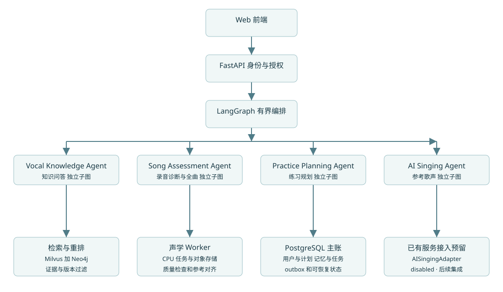
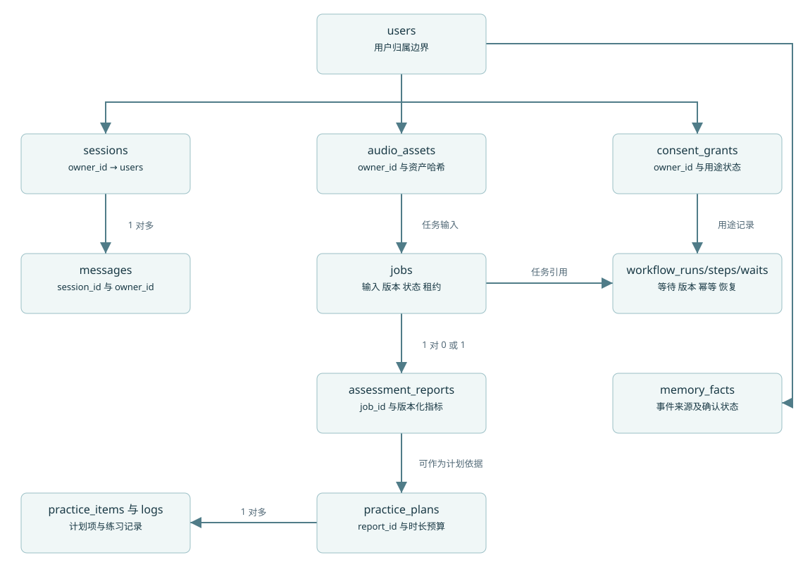

DeepVocal 项目需求与复现文档 中文声乐问答 清唱测评 多维评分 练习计划 歌声接口预留
27 份文档 46 项功能需求 12 项非功能要求 51 个接口操作
当前为从零实现的设计基线，不含应用代码、真实模型权重或已验证效果。截图指标保留为待核验来源陈述。已吸收你的决策与补充资料；模型选择在实际接入时进行，中文资料缺口和未来验收均已明示。
打开 Markdown 源文档 DeepVocal 最终项目书阅读导航
版本 1.4；基线日期 2026-11-03。本包是后续开发的需求、设计、契约、原型和数据准备材料。应用尚未实现；文档审查通过不等于应用验收通过。本轮已吸收用户答卷及新参考资料，并修补跨文档设计冲突。
先读 01 范围与 19 决策结果，再读 04 概要、05 详细、06 数据库、07 接口。算法按 08 GraphRAG、09 音频、10 Skill/Memory、24 评分实施；前端按 11 和 prototype/index.html；工程执行按 13、14、25。23 列明本轮实际发现的设计缺陷及回归要求，26 给出参考资料采纳和最终交接。
当前固定边界
成人初学者和爱好者、中文流行演唱、本人非商业研究、本机开发、未来代码开源。当前只用中文原生知识资料，只接收清唱。四类专业子图均保留：Knowledge、Assessment、Planning、Singing；最后一类当前只提供禁用能力与未来接入契约，不开发真实生成。录音诊断和全曲测评共用 Assessment。
问答、短测、全曲、多维与综合练习参考分、规划、GraphRAG、Skill 全流程和分层 Memory 均在当前目标中。独立人工效果评测由用户另行安排。付费模型具体型号、价格和额度按用户要求在实际接入时给选项，不阻碍文档定稿，但未配置不能启用付费调用。
成果及证据状态
46 项功能需求、12 项非功能要求、92 条正反向应用用例和独立缺陷回归清单。接口和数据库附录是待实现的设计，不是现有服务器。交互原型数据仅在内存中，不上传或分析声音。
已收集的英文教材、开放乐理、音频和曲谱仍可用于研究；当前中文知识库尚未收齐。准备库未计算 embedding、未写入 Milvus/Neo4j；共现边不是已审核语义关系。所有用户练声记录保持为空。不得把原图历史 hit@5、Token 节省或新面经中“已完成”的文字写成本项目实测。
单一基线与更新
需求编号以 contracts/requirements.json 为准；公开结构以 contracts/openapi.json 为准；数据库以 database/schema.sql 及 06 章事务规则为准；评分以 contracts/scoring-rules.json 与 24 章为准；用户原答卷只读保存在 sources/user-inputs。文档、API、DDL 和页面出现冲突时，不允许只改提示词掩盖，必须记录 ADR 并同步受影响附件。
27 份正文可离线阅读。脚本检查区分文档一致性、真实数据结构、可选完整 JSON Schema/SQL 语法验证与未来应用测试；检查结果见 CHECK_REPORT.md。尚未运行的 AT/DR 用例一律 NOT_RUN。
打开 Markdown 源文档 DeepVocal 项目范围与完成定义
目标是基于 LangGraph 统一编排声乐理论答疑、清唱短录音分析、全曲参考测评和个性化练习规划，并通过 GraphRAG、Skill 与分层 Memory 支持跨会话练习。采用结构化规则与意图分类降低工具误调用；是否取得效果需由实验验证。
当前必须完成
领域 交付范围 完成证据 四专业子图 Knowledge、Assessment、Planning、Singing 四个独立 compiled subgraph；Singing 仅接口占位 各子图独立状态、提示、工具白名单和输出 schema；禁用路径可测 中文知识 获许可中文原生资料、引用与不足处理、Vector 基线、Milvus+Neo4j 混合检索 实际中文 chunk、来源与版本；不能用英文标签冒充中文正文 测评 清唱短测与全曲、质量控制、参考对齐、多维与综合练习参考分 可复算测量/分数、覆盖、不可用原因和规则版本 练习 7/14 天计划、每日分钟、可编辑未完成项目、打卡与连续性 计划不超时间、完成日志不被新版本覆盖 Skill 轨迹脱敏、候选、Critic、回放、维护者发布、LazyRegistry 候选不能直接生效；撤回版本不会再加载 Memory 滑动窗口、L1 原始事件、L2 可追溯事实、L3 画像、异步更新 当前修改立即可见、旧任务不覆盖、来源删除可传播 工程 鉴权、上传、异步任务、幂等、持久工作流、授权/保留/删除、观测与恢复 契约、迁移、功能与竞态测试；无真实实现前不标完成
本次明确延期
真实歌声生成、音色训练、GPU 合成部署由已有外部实现后续接入，本次只保留 AISingingAdapter 和能力/请求/错误协议。POST /singing 在 disabled 模式返回 501 FEATURE_DISABLED，不创建 job、不收费、不生成音频。第四子图仍能解释状态和返回未来接入所需说明。真实生成不能计入当前验收分母，也不能显示完成百分比。
独立人工检索集、单 Agent 效果对照、Token 优化和专业唱功盲评由用户另行完成；应用须保留轨迹导出和指标工具。基本功能、权限、公式、故障与并发回归不能因为效果实验外置而省略。
用户、资料与研究边界
当前面向成人初学者/爱好者，以中文流行演唱为场景。只用中文原生资料服务问答，不默认用英文自动翻译补库；已有英文种子保留归档。没有教师参与时，研究级内容通过来源/证据一致性校验，expert_verified=false；不能据录音判断疾病、声带机能或未经测量的气息/共鸣成因。
研究级评分可供用户比较同一任务、规则、参考和设备条件下的练习变化，不是资格考试、教学认证或专业水平结论。流行歌曲以用户自传有权材料为主，非商业目的不自动授权复制任意录音、歌词和谱面。
角色和发布
学习者只操作本人资料。维护者用独立 admin scope 导入资料、审核 Skill；运维不默认取得试听权限。即使本机研究也保留双用户隔离测试，避免未来开源后把 owner 漏洞带出去。代码仓库采用单独代码许可证；模型、数据、教材、原始答卷和面经不随代码自动公开。
完成判定
按 M0→M7 逐步实施是依赖顺序，最终必须覆盖当前范围。M0 的模型具体选择按触发清单在接入前完成，不以虚构版本填空。当前各业务能力均 NOT_IMPLEMENTED，真实 AT/DR 均 NOT_RUN；文档完结允许进入后续开发，不代表预先证明模型效果、性能或依赖兼容性。
打开 Markdown 源文档 DeepVocal 产品需求文档
DeepVocal 是基于 LangGraph 的多 Agent 项目，核心为 Vocal Knowledge Agent、Song Assessment Agent、Practice Planning Agent 和 AI Singing Agent 的统一编排。五类业务能力分别为声乐理论答疑、录音诊断、全曲测评、练习规划与个性化歌声生成；其中录音诊断和全曲测评由同一个 Song Assessment Agent 承担。结构化路由规则与意图分类负责选择专家 Agent，目标是在保持任务完成质量的同时，降低单 Agent 混合处理多类任务时的工具误调用。该效果需通过同条件对照验证，不能仅由架构图推定。
产品定位与信息结构
首页展示最近任务、今天的练习和继续学习入口。主导航依次为声乐问答、录音测评、练习计划、参考歌声、曲目与历史、记忆与隐私。管理端独立展示知识入库、Skill 审核和评测记录。所有自动生成页面应显示模型版本或规则版本以及任务时间。
核心用户旅程
用户首次进入时选择学习目标、每周频次、单次可用时间和自述经验，不强制推断声部。用户可以直接问“换声区为什么不稳定”，系统基于有来源的知识回答，并解释资料不足的部分。随后用户上传 10 至 120 秒录音；系统进行质量检测，识别可分析范围，生成带时间片段的建议。用户确认目标后得到 7 日计划，完成练习后记录感受，下一次登录可以继续。
未来接入已有歌声服务后扩展闭环（当前禁用）：用户先确认本人声音使用授权，上传声音样本，并提供旋律来源、歌词、调号与速度；生成参考音频后加入个人曲目库。用户对该参考进行模唱，报告与计划关联 reference_id，保留生成、模唱与再评估之间的关系。
页面需求
页面 输入 输出与关键操作 空态与错误态 首页 用户会话 今日计划、最近报告、继续任务 新用户引导，不伪造历史 声乐问答 文本、可选曲目或报告 答案、证据卡、问题澄清、加入目标 无证据则说明不足；不展示无效引用 录音测评 文件、目标、可选参考 上传进度、质量提示、任务状态、分段报告 静音、伴奏过强、超限、无参考分别处理 练习计划 目标、时间、报告 每日任务、方法、停止条件、打卡 证据不足只给低风险一般练习 歌声服务接入 仅查看当前能力 显示 disabled 和未来接入说明 当前不上传音色、不创建生成任务 曲目与历史 时间和任务筛选 曲目片段、分析趋势、重新练习 样本条件不同不直接比较总分 记忆与隐私 用户确认 可查看、修正、删除的事实；撤销声音授权 删除进行中可见，并停止后续模型使用 管理台 资料或候选 Skill 入库状态、证据预览、审核和版本 非管理员不可进入或调用接口
产品规则
问答、测评、计划、生成由后端结构化路由分配。用户可以更正意图；涉及上传、生成或隐私删除的动作必须由明确操作触发。模糊需求先问一个必要问题。用户录音中出现的文字、文件名、检索材料和 Skill 内容均不具备修改系统权限的能力。
音频短测建议 10 至 120 秒，全曲不超过 10 分钟，单文件不超过 100 MiB；这三项是可配置的设计上限，需通过真实机器压测确认。无参考时仅报告音高轨迹、稳定性和信号质量等有限特征，节奏、歌词准确度与音准评分显示“未评估”。有旋律且对齐可靠后才显示相对参考的偏差。
计划默认 7 天，可选 14 天，单日任务合计不能超过用户可用分钟数。提供热身、专项、复盘的明确时长，用户可跳过或重新生成。出现疼痛或持续不适的用户输入时，停止强化训练建议并提示向合适专业人士咨询。
迭代顺序
先实现登录与资源隔离、问答、短测与计划；然后接入图谱和跨会话记忆；再完成真实全曲测评和自动候选 Skill。已有声音生成服务留到后续独立接入。通过产品内明确标签区分 Mock、一般声学描述和有参考测评，避免把界面占位分数误认为算法结果。
产品验收示例
在一个新账户下提问、查看证据、上传可用录音、完成测评、创建 7 日计划、记录一次练习、退出再登录后看到历史，构成 基础闭环 主流程。另一账户对这些资源的任何直接 ID 请求都应得到 404。当前验收 disabled 接口和无副作用阻断；真实歌声接入在后续任务验收，独立效果指标由用户另行评测。
业务规则与需求关联
规则 可观察的业务约束 对应需求 BR-01 单独附件不触发分析，用户明确提交的动作才创建有副作用的任务 FR-004、011、037 BR-02 图谱与向量证据受同一来源版本、许可、owner 和可见范围约束 FR-007～010 BR-03 无参考或低对齐时对应指标为 null，并带原因，不以 0 分填充 FR-013～015 BR-04 报告可创建计划但不代表用户接受，计划时间不超过用户确认值 FR-016、017 BR-05 当前生成禁用，不接收音色训练或创建生成任务；后续集成另验授权与能力 FR-018～020 BR-06 未来生成参考→用户新模唱→测评→计划保留不同资产与任务依赖，当前仅预留 FR-021 BR-07 许可未定/未审核来源、共现候选、未发布 Skill 不进入生产回答 FR-006、024～026、038 BR-08 用户记录来自本人使用行为，不由公开教材或抓取的他人历史替代 FR-029～032
目标已由 19 章答复确定：本人非商业研究，成人初学者/爱好者，中文流行演唱与中文资料。
V1.4 已决范围
以 01 和 19 章为当前范围：成人中文流行演唱研究、清唱、问答/短测/全曲/计划/GraphRAG/Skill/Memory 全部保留；AI Singing 只保留子图及禁用适配接口。评分改为 24 章的研究级多维与综合参考分，不能套用旧版“不显示总分”的概括。中文资料准入强制执行；原有英文种子不进入当前活动库。独立人工效果实验由用户另行安排，不作为功能编码准入。
打开 Markdown 源文档 DeepVocal 软件需求规格说明书 SRS
版本 1.4。U 为用户最新答卷，S 为原简介，D 为补充工程设计；所有应用实现均 NOT_IMPLEMENTED，验收均 NOT_RUN。当前完整范围由 01 章规定，FUTURE_INTEGRATION 不参与当前完成分母，EXTERNAL_EVALUATION 由用户另行执行。
FR-001 身份与用户隔离
优先级/范围：P0；模块：identity；里程碑：M1；页面：UI-01；用例：UC-01。
触发：用户访问任何私有资源。
必须行为：从经过验证的 Token 解析身份，查询强制限定 owner。
失败处理：另一用户资源统一 404。
正向 AT-001-P：两个账户不能读写彼此的录音、会话、任务和记忆。
反向 AT-001-N：使用伪造或过期 Token 必须 401。
FR-002 学习目标与时间
优先级/范围：P0；模块：profile；里程碑：M1；页面：UI-01；用例：UC-04。
触发：用户设置目标与每日时间。
必须行为：保存目标、经验与 5 至 120 分钟约束。
失败处理：非法分钟返回 422。
正向 AT-002-P：重登后可以读回偏好。
反向 AT-002-N：超范围时间不能提交。
FR-003 会话与历史
优先级/范围：P0；模块：conversation；里程碑：M2；页面：UI-02；用例：UC-01。
触发：用户创建会话并提问。
必须行为：独立保存消息及证据引用，游标分页。
失败处理：会话不存在或归属错误为 404。
正向 AT-003-P：跨会话历史不互相混入。
反向 AT-003-N：外部 session_id 不得注入消息。
FR-004 结构化意图路由
优先级/范围：P0；模块：router；里程碑：M2；页面：UI-02；用例：UC-01。
触发：文本或明确 UI action 输入。
必须行为：规则优先并分类到四类 Agent 或 clarify。
失败处理：低把握时澄清，不先执行工具。
正向 AT-004-P：固定路由集可输出合法结构与原因枚举。
反向 AT-004-N：恶意资料不能诱发越权工具。
FR-005 带证据的声乐问答
优先级/范围：P0；模块：knowledge；里程碑：M2；页面：UI-02；用例：UC-01。
触发：用户询问理论或练习方法。
必须行为：仅检索当前中文原生、获许可且证据校验通过的材料；原文不足时说明资料不足。
失败处理：无证据说明不足。
正向 AT-005-P：答案中的引用均可打开到实际片段。
反向 AT-005-N：不存在的 chunk_id 必须被后置验证拒绝。
FR-006 知识入库与许可
优先级/范围：P0；模块：ingestion；里程碑：M2；页面：UI-08；用例：UC-08。
触发：管理员提交资料。
必须行为：登记来源许可，清洗分段，版本化激活。
失败处理：缺许可或失败时不激活。
正向 AT-006-P：入库源、chunk 和索引版本一致。
反向 AT-006-N：普通用户不能入库或激活语料。
FR-007 Milvus 向量召回
优先级/范围：P0；模块：retrieval；里程碑：M2；页面：UI-02；用例：UC-01。
触发：存在 query 和冻结语料。
必须行为：按 scope 与版本检索 topK。
失败处理：服务不可用不返回伪证据。
正向 AT-007-P：相同配置保留候选与过滤记录。
反向 AT-007-N：跨用户向量命中不得出现在候选中。
FR-008 图谱实体与关系
优先级/范围：P1；模块：graph；里程碑：M4；页面：UI-08；用例：UC-08。
触发：chunk 通过审核。
必须行为：抽取六类实体及来源关系，保留证据。
失败处理：孤立无来源关系不能激活。
正向 AT-008-P：每个激活关系均能回到有效 chunk。
反向 AT-008-N：错误来源 ID 被拒绝。
FR-009 混合检索与重排
优先级/范围：P1；模块：retrieval；里程碑：M4；页面：UI-02；用例：UC-01。
触发：向量召回后存在种子实体。
必须行为：权限内扩展 1 至 2 跳，融合去重并重排。
失败处理：图失败可标记降级。
正向 AT-009-P：输出唯一 top5 与通道来源。
反向 AT-009-N：超过跳数或预算必须截断。
FR-010 检索评测与消融
优先级/范围：EXTERNAL_EVALUATION；模块：evaluation；里程碑：M4；页面：UI-08；用例：UC-08。
触发：冻结人工测试集与四组配置。
必须行为：保留导出逐题结果与指标计算接口；独立人工集与效果对照由用户另行安排。
失败处理：测试集缺记录或重复 ID 则失败。
正向 AT-010-P：同集四组可比较且保留数据哈希。
反向 AT-010-N：合成样例不得冒充 100 题实测。
FR-011 媒体上传与安全解码
优先级/范围：P0；模块：media；里程碑：M1；页面：UI-03；用例：UC-02。
触发：用户选择录音或旋律文件。
必须行为：签名上传并校验大小哈希与实际格式。
失败处理：伪格式、超限或解码失败拒绝。
正向 AT-011-P：仅 complete 后资产可供任务使用。
反向 AT-011-N：未完成或不属于本人的资产不能提交任务。
FR-012 音频质量检查
优先级/范围：P0；模块：audio；里程碑：M3；页面：UI-03；用例：UC-02。
触发：音频已可解码。
必须行为：只接收清唱，检查静音/削波/干扰；混音不分离、不强行评分。
失败处理：不可分析音频不产出有效评分。
正向 AT-012-P：已知静音样例显示质量不足。
反向 AT-012-N：低质样例不得标记高置信分析。
FR-013 短录音声学描述
优先级/范围：P0；模块：assessment；里程碑：M3；页面：UI-03；用例：UC-02。
触发：10 至 120 秒可用音频。
必须行为：估计基频轨迹、有效时长、范围和稳定性。
失败处理：无声帧为 null。
正向 AT-013-P：已知频率样例误差可测且单位明确。
反向 AT-013-N：无参考时不生成音准节奏分。
FR-014 全曲参考对齐
优先级/范围：P1；模块：alignment；里程碑：M6；页面：UI-03；用例：UC-03。
触发：全曲加同权属参考。
必须行为：分乐句对齐，计算可用音高和起音偏差。
失败处理：低覆盖区间标记不可用。
正向 AT-014-P：已知移调和时间偏移样例可定位。
反向 AT-014-N：参考缺失或错配不得正常打分。
FR-015 版本化分段报告
优先级/范围：P0；模块：report；里程碑：M3；页面：UI-03；用例：UC-02。
触发：测评成功或质量不合格。
必须行为：保存原始测量、多维分与综合练习参考分、版本、覆盖和不可用原因；按24章公式。
失败处理：未成功任务不得伪造成功报告。
正向 AT-015-P：每个值有单位和算法版本。
反向 AT-015-N：不可用数值不得用 0 替代。
FR-016 计划生成与编辑
优先级/范围：P0；模块：planning；里程碑：M3；页面：UI-04；用例：UC-04。
触发：报告或目标加每日时间。
必须行为：生成 7 或 14 日任务并允许修改。
失败处理：时长超额或缺必要字段不能保存。
正向 AT-016-P：每日总分钟不超过用户设定。
反向 AT-016-N：未经支持的高风险建议被规则拦截。
FR-017 练习打卡与记录
优先级/范围：P0；模块：practice；里程碑：M3；页面：UI-04；用例：UC-04。
触发：用户完成本人计划项。
必须行为：保存时间、主观感受并写事件。
失败处理：不属于本人的 item 返回 404。
正向 AT-017-P：打卡后历史与进度可查询。
反向 AT-017-N：修改计划不丢失旧打卡关联。
FR-018 声音用途授权
优先级/范围：FUTURE_INTEGRATION；模块：consent；里程碑：FUTURE；页面：UI-05；用例：UC-05。
触发：用户明确确认本人声音使用。
必须行为：保留未来歌声授权契约；当前生成关闭，不要求上传本人音色样本。
失败处理：不勾选或已撤销不能生成。
正向 AT-018-P：可查看授权并立即阻止新使用。
反向 AT-018-N：授权不能由模型推断或默认勾选。
FR-019 旋律与能力校验
优先级/范围：FUTURE_INTEGRATION；模块：singing；里程碑：FUTURE；页面：UI-05；用例：UC-05。
触发：歌词、样本、MIDI 或干声与参数。
必须行为：保留旋律与后端能力契约；当前 capabilities 明确 disabled。
失败处理：无旋律或不支持的类型返回 422。
正向 AT-019-P：SVS/SVC 路线只接受各自支持输入。
反向 AT-019-N：SVC 不得声称只凭歌词生成。
FR-020 已有歌声服务接入预留
优先级/范围：FUTURE_INTEGRATION；模块：singing；里程碑：FUTURE；页面：UI-05；用例：UC-05。
触发：满足授权和能力的请求。
必须行为：只定义适配接口；本期不训练/生成，POST /singing 返回501且无job/产物。
失败处理：真实后端失败不得静默切换 Mock。
正向 AT-020-P：能力页返回disabled且第四子图仍存在。
反向 AT-020-N：未接入真实服务时不能报告生成成功。
FR-021 参考曲目与模唱闭环
优先级/范围：FUTURE_INTEGRATION；模块：song；里程碑：FUTURE；页面：UI-06；用例：UC-06。
触发：生成成功后用户选择练习。
必须行为：保留生成→另传本人模唱→测评→规划引用协议；当前不承诺生成闭环已可用。
失败处理：已删或撤销参考不能启动新练习。
正向 AT-021-P：闭环各节点均能追溯资产与授权。
反向 AT-021-N：不可公开其他用户的参考声音。
FR-022 异步任务与取消
优先级/范围：P0；模块：jobs；里程碑：M1；页面：UI-03；用例：UC-10。
触发：测评生成入库等耗时请求。
必须行为：202 返回 job，轮询并可请求合作取消。
失败处理：失败有错误码，终态不可反转。
正向 AT-022-P：状态迁移和租约恢复符合状态机。
反向 AT-022-N：重复投递不得产生双份结果。
FR-023 生成幂等与额度
优先级/范围：P0；模块：jobs；里程碑：M1；页面：UI-05；用例：UC-10。
触发：重复提交或并发生成。
必须行为：所有副作用路由稳定幂等；付费调用需原子预留费用与额度，未知收单不盲重试。
失败处理：键冲突 409，超额度 429。
正向 AT-023-P：并发同键只有一个业务任务。
反向 AT-023-N：响应丢失不能盲目重复计费。
FR-024 Skill 发现与懒加载
优先级/范围：P1；模块：skill；里程碑：M5；页面：UI-08；用例：UC-09。
触发：路由阶段需要候选技能。
必须行为：只注入摘要，选中后校验并加载正文。
失败处理：未发布或哈希错误不得加载。
正向 AT-024-P：未选择正文不在实际 prompt 中。
反向 AT-024-N：不同版本不能按同名错误命中缓存。
FR-025 轨迹采集与候选生成
优先级/范围：P1；模块：skill；里程碑：M5；页面：UI-08；用例：UC-09。
触发：重复成功任务产生模式。
必须行为：脱敏轨迹生成候选，不自动发布。
失败处理：含用户敏感信息候选被拒绝。
正向 AT-025-P：候选保留模式来源与测试需求。
反向 AT-025-N：不能把私有声音与记录写入共享 Skill。
FR-026 Critic 审核与发布
优先级/范围：P1；模块：skill；里程碑：M5；页面：UI-08；用例：UC-09。
触发：候选申请发布。
必须行为：Critic、离线回放和人工批准后版本化发布。
失败处理：不合格拒绝或修订。
正向 AT-026-P：生产仅加载 published 且未退役版本。
反向 AT-026-N：自动 pass 不能跳过人工批准。
FR-027 Skill Token 对照
优先级/范围：EXTERNAL_EVALUATION；模块：evaluation；里程碑：M5；页面：UI-08；用例：UC-09。
触发：固定任务及相同 tokenizer。
必须行为：记录真实注入Token并可导出；独立效果实验由用户安排，代码保留懒加载功能测试。
失败处理：缺 tokenizer 或 prompt 哈希不报严格结果。
正向 AT-027-P：报告加权比例和完成率。
反向 AT-027-N：不能把注入片段节省当作总账单节省。
FR-028 短期对话窗口
优先级/范围：P0；模块：memory；里程碑：M2；页面：UI-02；用例：UC-01。
触发：连续多轮会话。
必须行为：按预算裁剪历史并保留当前任务。
失败处理：超模型上下文预算先裁剪或拒绝。
正向 AT-028-P：单轮输入含输出预留不超模型限制。
反向 AT-028-N：不得引入其他会话未授权内容。
FR-029 L1 原始练习事件
优先级/范围：P1；模块：memory；里程碑：M5；页面：UI-07；用例：UC-07。
触发：已提交的交互和练习事件。
必须行为：写可追踪来源和过期时间的事件。
失败处理：消费失败不回滚用户主操作。
正向 AT-029-P：同一事件重复消费不重复写事实。
反向 AT-029-N：用户删除的来源不可再被消费。
FR-030 L2 事实候选与确认
优先级/范围：P1；模块：memory；里程碑：M5；页面：UI-07；用例：UC-07。
触发：异步整理用户状态。
必须行为：提取候选/明确自述/测量观测，版本化纠正；晚到整理不能覆盖新修正或复活删除。
失败处理：模型推断不可自动变 confirmed。
正向 AT-030-P：事实可回看来源并由用户修改。
反向 AT-030-N：推断不能伪装成用户明确陈述。
FR-031 L3 用户画像重建
优先级/范围：P1；模块：memory；里程碑：M5；页面：UI-07；用例：UC-07。
触发：已确认事实发生变化。
必须行为：从有效事实重建画像并关联 fact_ids。
失败处理：冲突事实暂不合并。
正向 AT-031-P：新会话只读取有效本人画像。
反向 AT-031-N：删除或过期事实不得残留画像。
FR-032 记忆与声音删除
优先级/范围：P0；模块：privacy；里程碑：M1；页面：UI-07；用例：UC-07。
触发：用户请求删除或撤销。
必须行为：立即停止新访问并异步清理全链路。
失败处理：失败显示进度并有限重试。
正向 AT-032-P：对象缓存图谱向量及衍生记录均有清理证据。
反向 AT-032-N：恢复备份后不得复活已删数据。
FR-033 可观测与脱敏审计
优先级/范围：P0；模块：observability；里程碑：M1；页面：UI-08；用例：UC-10。
触发：请求跨节点及任务执行。
必须行为：记录 trace、版本、耗时、工具摘要与错误。
失败处理：日志写失败不暴露用户数据。
正向 AT-033-P：故障可从 trace_id 定位。
反向 AT-033-N：日志不得包含密钥原音频和完整隐式推理。
FR-034 状态提示与可访问性
优先级/范围：P0；模块：frontend；里程碑：M3；页面：UI-01；用例：UC-02。
触发：用户操作页面。
必须行为：空态、错误态、进度、单位和键盘反馈完整。
失败处理：网络错误可重试且不假成功。
正向 AT-034-P：关键流程可用键盘完成。
反向 AT-034-N：不能只用颜色区分结果。
FR-035 环境与数据冻结
优先级/范围：P0；模块：reproduce；里程碑：M0；页面：UI-08；用例：UC-10。
触发：一次可审计发布。
必须行为：固定代码依赖镜像模型语料评测哈希。
失败处理：未锁字段阻止宣称严格复现。
正向 AT-035-P：另一机器可按同锁重跑并得到可比较记录。
反向 AT-035-N：main/latest 标签不能当版本锁。
FR-036 备份恢复与回滚
优先级/范围：P1；模块：operations；里程碑：M7；页面：UI-08；用例：UC-10。
触发：迁移故障或灾难恢复。
必须行为：恢复数据后重放删除与撤销账本再开放。
失败处理：演练失败不得宣称 RTO 达标。
正向 AT-036-P：有实际恢复记录与权限抽查。
反向 AT-036-N：回滚不得覆盖用户新授权状态。
FR-037 模型输出与工具约束
优先级/范围：P0；模块：guardrail；里程碑：M2；页面：UI-02；用例：UC-01。
触发：模型建议动作或生成结构。
必须行为：schema、资源权属、白名单和预算由代码验证。
失败处理：非法结构最多有限修复然后失败。
正向 AT-037-P：敏感工具只从合法业务动作执行。
反向 AT-037-N：提示词注入不能提升权限。
FR-038 管理权限与内容版本
优先级/范围：P0；模块：admin；里程碑：M2；页面：UI-08；用例：UC-08。
触发：管理员审核知识及配置。
必须行为：admin scope 与审核轨迹、原子版本切换。
失败处理：普通用户 403，构建失败保留旧版本。
正向 AT-038-P：激活与回滚可审计。
反向 AT-038-N：模型不能替管理员批准内容。
FR-039 四类专家子图与统一编排
优先级/范围：P0；模块：multiagent；里程碑：M2；页面：UI-01；用例：UC-01。
触发：用户发起五类业务中的任一任务。
必须行为：四个独立子图；当前singing仅返回禁用能力，统一规则+意图分类及受控DAG。
失败处理：clarify 与 worker 不算额外业务 Agent。
正向 AT-039-P：录音诊断与全曲均进入 Song Assessment，其他三类职责一致。
反向 AT-039-N：不能把全部工具交给一个循环后仅改角色名称。
FR-040 单 Agent 误工具调用对照
优先级/范围：EXTERNAL_EVALUATION；模块：evaluation；里程碑：M7；页面：UI-08；用例：UC-11。
触发：冻结相同模型数据工具预算及安全策略。
必须行为：保留同条件单Agent对照协议与轨迹导出；实验由用户独立执行。
失败处理：被拦截的误调用仍需计数，未实测不得宣称下降。
正向 AT-040-P：可从逐题轨迹重算请求级与调用级误调用。
反向 AT-040-N：通过拒绝全部任务降低误调用不得视为质量通过。
FR-041 用途分级授权
优先级/范围：P0；模块：privacy；里程碑：M1；页面：UI-07；用例：UC-07。
触发：用户启用分析/保存/跨会话记忆。
必须行为：独立用途授权且默认不含研究训练；撤销递增revision并阻止后台旧任务提交。
失败处理：拒绝跨会话授权时不得整理长期画像。
正向 AT-041-P：授权只控制对应目的。
反向 AT-041-N：拒绝跨会话授权时不得整理长期画像。
FR-042 可选保留策略
优先级/范围：P0；模块：privacy；里程碑：M1；页面：UI-07；用例：UC-07。
触发：用户设置或修改保存时长。
必须行为：保存原件/报告独立期限；缩短期限重算过期，延长不复活已删除数据。
失败处理：无期限或越过上限不静默接受。
正向 AT-042-P：保存后读回期限与版本。
反向 AT-042-N：无期限或越过上限不静默接受。
FR-043 持久工作流恢复
优先级/范围：P0；模块：orchestration；里程碑：M1；页面：UI-03；用例：UC-10。
触发：等待用户或后台job后恢复。
必须行为：持久run/step/wait，owner绑定、一次性版本化恢复令牌、全工作流累计预算。
失败处理：重复恢复不重复创建任务，跨owner一律404。
正向 AT-043-P：刷新后可定位当前等待与已完成产物。
反向 AT-043-N：重复恢复不重复创建任务，跨owner一律404。
FR-044 多维与综合参考评分
优先级/范围：P0；模块：assessment；里程碑：M3；页面：UI-03；用例：UC-02。
触发：清唱分析完成。
必须行为：按工程规则计算多维分与综合参考分，携带profile/覆盖/规则版本/不可用原因。
失败处理：无参考不生成音准节奏分，低质量不强行总分。
正向 AT-044-P：已知度量可复算同一分数。
反向 AT-044-N：无参考不生成音准节奏分，低质量不强行总分。
FR-045 中文语料准入
优先级/范围：P0；模块：knowledge；里程碑：M3；页面：UI-08；用例：UC-08。
触发：导入或激活知识材料。
必须行为：当前只接受中文原生材料，英文归档不入活动库，保留逐来源证据和许可。
失败处理：伪造中文标签或共现边不得自动成为教学事实。
正向 AT-045-P：符合中文和用途规则才可激活。
反向 AT-045-N：伪造中文标签或共现边不得自动成为教学事实。
FR-046 研究级内容与开源边界
优先级/范围：P0；模块：governance；里程碑：M3；页面：UI-08；用例：UC-08。
触发：启用知识/练习或准备开源。
必须行为：证据自动核查并标研究级，关闭临床判断；代码和私人数据/语料分离发布。
失败处理：无专家审核不得标expert_verified或教师认证。
正向 AT-046-P：开源清单可审查且不含密钥或录音。
反向 AT-046-N：无专家审核不得标expert_verified或教师认证。
NFR-001 安全与归属
{"id": "NFR-001", "title": "安全与归属", "target": "所有私有资源在读取、执行和产物发布时验证身份与归属", "verification": "IT-01 IT-05 IT-06 IT-07", "status": "NOT_RUN"}
NFR-002 接口性能
{"id": "NFR-002", "title": "接口性能", "target": "20 并发 1000 次读请求 P95 小于 500 ms；任务创建 P95 小于 1 s，待实测", "verification": "性能协议", "status": "NOT_RUN"}
NFR-003 问答性能
{"id": "NFR-003", "title": "问答性能", "target": "5 并发至少 100 问 P95 小于 15 s，含错误与超时分母，待实测", "verification": "问答压测", "status": "NOT_RUN"}
NFR-004 声学处理性能
{"id": "NFR-004", "title": "声学处理性能", "target": "30 秒短测 P95 小于 60 s，硬件和模型必须记录，待实测", "verification": "音频压测", "status": "NOT_RUN"}
NFR-005 可靠性
{"id": "NFR-005", "title": "可靠性", "target": "任务至少一次投递但业务最多一次成功产物；崩溃后租约可恢复", "verification": "IT-03 IT-04 IT-09", "status": "NOT_RUN"}
NFR-006 删除与保留
{"id": "NFR-006", "title": "删除与保留", "target": "立即阻断新访问，活跃清理目标 24 小时；备份按冻结期限轮替", "verification": "IT-10 IT-11", "status": "NOT_RUN"}
NFR-007 可复现性
{"id": "NFR-007", "title": "可复现性", "target": "代码依赖镜像模型数据参数与逐题输出可追踪；未锁版本明确标注", "verification": "环境锁验收", "status": "NOT_RUN"}
NFR-008 可维护性
{"id": "NFR-008", "title": "可维护性", "target": "业务模块隔离；模型与存储通过适配器；迁移可演练", "verification": "契约与集成测试", "status": "NOT_RUN"}
NFR-009 可观测性
{"id": "NFR-009", "title": "可观测性", "target": "所有关键请求有 trace_id，分离排队与处理耗时，无敏感日志", "verification": "审计抽查", "status": "NOT_RUN"}
NFR-010 可访问性
{"id": "NFR-010", "title": "可访问性", "target": "关键按钮有名称，键盘操作有效，进度有文本，不以颜色为唯一含义", "verification": "键盘与读屏抽查", "status": "NOT_RUN"}
NFR-011 灾难恢复
{"id": "NFR-011", "title": "灾难恢复", "target": "候选 RPO 24 小时 RTO 4 小时，仅在真实演练通过后宣称", "verification": "IT-11 恢复演练", "status": "NOT_RUN"}
NFR-012 模型质量与诚实呈现
{"id": "NFR-012", "title": "模型质量与诚实呈现", "target": "无参考维度不评分，引用可核验，Mock 与真实产物明确区分", "verification": "IT-08 IT-12 质量审阅", "status": "NOT_RUN"}
跨需求约束
多维与综合分按 24 章统一定义；中文准入优先于旧英文种子；生成禁用时不能创建 job。不能为通过当前验收而启用 future 模块，不能把外部效果实验伪造为已通过。数据单位、空值、版本、owner、授权和幂等必须按契约校验。
打开 Markdown 源文档 DeepVocal 概要设计
采用模块化单体、独立 worker 与四个 LangGraph 专业子图。FastAPI 是身份与资源边界；Supervisor 只编排，不是第五类专业 Agent。各子图可以共用同一付费 LLM，但工具、提示词、局部状态独立。未选中的专家不执行。

系统主要调用路径 组件责任
组件 责任 不承担的责任 Web React+TypeScript 输入、确认动作、上传进度、报告与恢复入口 不能以客户端 owner/隐藏按钮代替权限 FastAPI OIDC 验证、输入校验、幂等、事务、workflow/job API 不在请求事件循环运行长音频 CPU 分析 SupervisorGraph 规则+分类、依赖 DAG、预算、等待和输出验证 不直接增加工具权限或猜测缺失资源 Knowledge 中文证据问答；knowledge.retrieve 不创建测评/计划/生成任务 Assessment 短测和全曲；audio.inspect、assessment.submit/get_report 不输出疾病或未启用的成因标签 Planning reports.read、knowledge.retrieve、plans.create/update 不越过用户已确认的目标与分钟 Singing singing.capabilities；disabled 提示 当前无 singing.submit，不调用已有外部设备 PostgreSQL 业务事实、workflow/事件/审核/删除主账 不替代音频对象与向量/图谱索引 Milvus/Neo4j 同版本向量与关系投影 不自行产生证据或作为授权唯一来源 对象存储 私有不可变版本的媒体原件与派生物 不以永久公开 URL 暴露用户文件 队列/worker 至少一次交付、有限重试、租约、独立进程解码 队列不是唯一事实来源；Redis 不是必选业务主账
队列可以理解为后台待办清单，对象存储是录音文件仓库。候选是 Redis 队列与 S3 兼容私有存储；具体产品在 M1 初始化给用户选项。应用以适配接口隔离，不把当前没有选择的产品写成已部署事实。
业务链路
问答：身份→中文活动语料/权限过滤→结构化路由→向量召回→映射实体种子→受限图扩展→去重融合重排→Evidence 验证→回答。图谱不可用时可在同版本向量证据范围降级，向量和证据均无效则说明不足。
测评：用户授权分析→申请上传→上传原件→complete 核验对象版本/大小/哈希→资产 ready→用户明确提交→job/outbox 原子写→worker 安全解码/质量检查/测量/评分→报告事务提交。上传完成本身不创建测评。异步质量检查成功但输入不可测时，job SUCCEEDED、report quality_failed、分数不可用；基础设施或解码失败为 FAILED。
评估后规划：用户一次明确确认包含两步的动作，workflow 先等测评 job；成功且报告可访问后读取证据和当前偏好生成计划。缺时间/目标则 WAIT_USER_INPUT；质量失败只能提出重录或经用户确认的一般计划，不把失败结果变成针对性诊断。
事务和投影
事务中写业务主账和 outbox；投递至少一次，消费者以事件 ID 去重，结果与消费回执同事务。图谱/向量分批构建，不假设分布式事务；同一个不可变 corpus_version 全部检查后才原子激活。状态和资源可见性以 PostgreSQL 为准，缓存和投影在读取前后都服从删除/授权 revision。
主要工程约束
OIDC 身份键为 issuer+subject。owner 只能从服务端注入。checkpoint 存资源 ID 和版本，不存临时签名 URL、密钥、原音频或无限历史。CPU 音频用隔离 worker 进程；API 超时不会自动取消已提交 job。真实服务异常不得静默换 Mock。
当前目标是本机研究，不承诺生产并发；Milvus 的实际版本部署依赖在环境锁中按官方版本补齐。生成关闭只影响该功能，不应使 readiness 因缺 GPU/生成服务而失败。任何供应商网关均为可选组件，GraphRAG 不是特定 OpenAI 兼容接口的同义词。
打开 Markdown 源文档 DeepVocal 详细设计
模块和输入状态
backend/app 分为 api、orchestration、agents、retrieval、audio、skills、memory、domain、persistence、workers；frontend、migrations、tests、eval 独立。State 保存 run_id/root_run_id、trace_id、服务端 owner/session、normalized_request、requested_intents、confirmed_action、resource_refs、report_refs、evidence_refs、memory_revision、skill_refs、budget、errors、status 和 result。资源只存 ID/版本，音频地址在使用时重新授权取得。
四个子图为 VocalKnowledgeGraph、SongAssessmentGraph、PracticePlanningGraph、AISingingGraph，代理枚举固定 knowledge/assessment/planning/singing；节点名称另存 graph_node。每个子图编译并绑定最小工具集；局部上下文不由整个 State 无限制复制。工具与输出先过 schema，再过 owner、用途、状态、版本和业务规则验证。
路由和动作确认
确定性 UI 动作→输入/当前等待核验→结构化意图分类→clarify。附件本身不强制 assessment；按钮与文本产生副作用冲突时先澄清。分类阈值初值 0.75 是工程参数，不是校准概率。decision=route 时 primary_intent 必须属于 requested_intents；clarify 时 primary_intent=null，不执行业务副作用。
聊天先返回动作草案，包含 intended_steps、asset/report 引用、目标、分钟和待确认字段；用户在对应界面确认后创建 workflow。一项确认可覆盖 assessment→planning 的有限 DAG，不要求每个只读步骤再确认；参数变更必须新动作版本。允许 knowledge→planning、assessment→planning，默认不并行广播。生成禁用请求进入 Singing 返回 FEATURE_DISABLED，不调用其他专家冒充生成。
工作流与长任务
workflow 状态为 CREATED/RUNNING/WAIT_JOB/WAIT_USER_INPUT/COMPLETED/FAILED/CANCELLED；job 状态为 QUEUED/RUNNING/SUCCEEDED/FAILED/CANCELLED，两者不能混用。持久业务表见 DDL；LangGraph checkpointer 的专用表由所选适配器 setup/migration 管理，不把业务 workflow JSON 当作官方 checkpoint 实现。
WAIT_JOB 记录 job 引用和预期完成步骤，完成事件自动唤醒，恢复前验证 job 属于同 owner、run 正在等它且未终止。WAIT_USER_INPUT 记录等待类型、允许输入 schema、一次性 resume_token_hash 与 version；对外返回不透明令牌，服务端只存哈希。POST /workflows/{id}/resume 以 version+令牌+幂等键原子消费；重复同请求返回已接受结果，不同输入冲突 409。用户不能上传 checkpoint 内容或任意跳转节点。
持久中断恢复可能重新运行等待点前的代码。副作用必须通过稳定 effect_key=root_run_id+step_key+action_revision 调用幂等服务，不能把“代码在 interrupt 前”当作只执行一次。已提交任务从主账读取，不再次提交；资源/授权过期则停止并请求新确认。图状态 reducer 对追加事件按 event_id 去重，不能拼接重复工具结果或覆盖其他子图产物。
有限预算
同步片段最多 24 次业务节点执行、12 次模型工具尝试、4 个专家步骤、2 次 handoff、90 秒墙钟时间。单一 schema 修复最多 1 次；幂等读的网络重试最多 2 次，均计入总尝试。被策略阻断的工具尝试也计数；强制代码鉴权不计模型工具，但计耗时。内部 LangGraph recursion_limit 单独配置并记录，不能等同业务节点预算。
一个 root workflow 跨恢复最多 24 次工具尝试、8 次恢复和 24 小时有效等待；次数累计在主账，重启、换子图或新 HTTP 请求不清零。过期则结束旧动作，用户可新建动作；不得隐式无限续期。需要更大预算先修改配置并增加回归，不能因任务难就忽略上限。
事务、租约与收费
所有副作用 POST、PATCH/DELETE 及恢复使用幂等键；键作用域为 owner+HTTP method+规范路径，不把 Authorization 或签名 URL 算入请求哈希。哈希基于规范化业务请求、动作版本及不可变资源版本。占位记录创建、业务提交和响应引用同事务；并发只有一个持有者。键至少保留到关联任务终态+24小时，未终态不清理。
worker 领取任务生成 claim_token，记录 job_attempt；heartbeat 延租必须匹配 token。提交用 job_id+claim_token+version 且 lease 未过期校验，旧 worker 提交受 fencing 拒绝。取消与成功提交竞争时锁同一 job：取消先提交则不能成功发布；成功先提交则取消返回终态快照。只清理本 attempt 暂存对象，不误删胜出的产物。
LLM 超时后若供应商是否收单不确定，只能查 provider_request_id 或报 UNKNOWN_PROVIDER_OUTCOME，不能盲重试收费。付费接入须配置币种、单次/每日硬额度，金额用最小币种整数、先预留后结算；未知状态保留预留并待核对。API 密钥和成本账不进入模型上下文。
失败、补偿和可见性
业务写入与 outbox 同事务；投递器发送成功但未来得及标记可重复投递，消费者 event_consumptions 防重复。对象先写 attempt 专属临时键，业务发布成功后关联不可变版本；事务失败的 orphan 到期清理。媒体删除先禁止访问并递增 owner data_revision，再物理清理对象、报告派生、索引、缓存、Memory 与 checkpoint。
session 按 (created_at,id) 稳定分页，cursor 绑定 owner、筛选和签名。模型、队列或缓存异常不回落匿名、不去掉过滤、不更换 corpus。所有错误保存 trace、originating_agent、错误码、retryable、用户下一步；不记录隐藏推理或完整敏感提示。
等待令牌的只读签发
进入 WAIT_USER_INPUT 的事务固定 wait_id、run version、到期时间和 token_key_version。用服务端专用 HMAC 密钥对 owner/run/wait/version/expiry 做规范串联，派生不可预测令牌，库中只保存 SHA256；同一等待重复 GET 返回同一令牌，不写状态或轮换版本。密钥不放 checkpoint；轮换时保留未过期 key version，丢失密钥则明确结束该等待并由用户重新确认动作，不能降级为无令牌恢复。恢复事务锁 wait/run，恒定时间核对哈希及 owner/version/expiry、consume 标记，业务推进与 outbox 同事务；重复同幂等键返回第一次响应，换键重放旧 token 返回409。
付费调用的费用事务
provider_budgets 按 owner/provider/currency/UTC 计费日唯一；provider_reservations 按 owner/effect_key 唯一。启用前必须选供应商并设置日硬上限和单调用 max_cost_minor；金额使用整数最小币种，所有请求（含 embedding、rerank、分类、压缩和重试）共享同一限额主账。先按预算行加锁，验证 spent+reserved+本次上限<=limit，再预留并记录 effect_key 后外呼。并发请求不能各读一次余额后无锁扣款。
已确认成功则原子释放预留并结算实际金额；确认未受理才释放。超时未知收单记 unknown，继续占用额度，只能用供应商请求ID查询或由维护者核对，不因租约到期直接退款重试。回调/查询也按 reservation version 幂等；币种不同不直接相加。若供应商不能承诺单调用上限，需先限制输入输出并核对其计费边界，否则不启用该适配器。硬限额是应用对新请求的准入限制，不能宣称能撤回已发生的供应商收费。
打开 Markdown 源文档 DeepVocal 数据库设计
PostgreSQL 保存事务主账；候选完整 DDL 见 database/schema.sql。它是开发建迁移的输入，本轮没有对运行中的数据库执行建表。Milvus/Neo4j 只保存可重建投影；SQLite seed 是离线准备库，不是业务主库。确切表数见 contracts/database-model.json 自动清单。

核心实体关系 表组与设计责任
表组 主要数据 一致性约束 用户/会话 users、profiles、sessions、messages issuer+subject 唯一；资源 owner 来自认证；消息复合外键 媒体/任务 audio_assets、jobs、job_attempts、asset_derivations 不可变对象版本与哈希；claim_token fencing；每job最多一个成功报告 工作流 workflow_runs、workflow_steps、workflow_waits owner/session 绑定、父运行同owner、步骤键唯一、等待令牌哈希与版本 测评/计划 assessment_reports、report_segments、practice_plans/items/logs 分数规则版本；片段时间合法；打卡 item/owner 唯一；版本化修改 知识/图谱 knowledge_sources、corpus_versions、documents/chunks、graph_entities/relations、chunk_entity_links 来源许可和语言；同版本同域映射；有效证据才投影 审核/映射 corpus_reviews、seed_id_mappings review_level 不冒充专家；原始字符串 ID 显式映射 UUID Skill skills、versions、reviews 发布版本不可原地改；私有模板域受控 Memory events、facts、profiles、fact_sources、profile_sources、compaction_runs 来源链复合owner外键、source_version去重、revision/watermark CAS 授权/保留 consent_grants、voice_consents、retention_preferences 独立用途、撤销可追溯、期限合法；声音用途当前预留 交付/删除 idempotency_keys、outbox_events、event_consumptions、deletion_ledger、deletion_requests、audit_events 同事务消费回执；tombstone不可因备份恢复遗失
归属与图谱隔离
knowledge_chunks 不再重复 scope/owner，必须 join knowledge_documents 和 corpus_versions 获取权限；避免复制字段互相矛盾。graph_entities/relations 绑定 corpus，chunk_entity_links 必须映射同 corpus。公开/私有 corpus 由 owner_id 与 scope CHECK 决定。跨表“同语料同域”、source可用性与relation evidence span仍需事务服务校验；不能声称单条外键覆盖所有语义。
所有私有业务引用使用 (id,owner_id) 复合外键。某表不带 owner（如 report_segments）只能经其已验证父表访问。默认无 RLS 时服务仓储每次限定 owner；如果未来加 RLS，连接池必须按事务设置并清除上下文，不能因启用 RLS 删除服务鉴权。
JSONB 与版本
metrics、scores 对应 OpenAPI Metric/ScoreBundle；空值语义由 JSON Schema 和服务验证。plan instructions/evidence、memory fact payload、retrieval config/evidence、Skill manifest 均带 schema_version，顶层对象/数组按 DDL 所列 CHECK 和服务 schema 校验共同约束；不得将任意模型 JSON 直接入库。LLM 结构修复失败不落半成品。
评分保留 measurement_version、ruleset_version、alignment/reference/config hash；只换中文解释时更新 explanation_version，不覆盖原测量。L3 使用关系表保存来源事实，同时保留 JSON 快照便于审阅。来源 UUID 与 seed 的字符串 ID 通过固定 namespace UUIDv5+source/version/locator 映射，绝不采用 Python hash() 或随机重建映射。
不能只靠 DDL 的事务约束
计划中 day_index<=plan.days、每天任务时长总和<=minutes_per_day；路径 plan_id 必须与 item.plan_id 相等。完成日志不随计划重写，已完成 item 不可修改，调整生成新 revision 并继承 family_id。检查和写入锁同一 plan，避免两次并发修改各自通过总量检查。
任务认领及提交校验 token、lease、version；报告归属的 job.kind 必须为 assessment。任何参考资产必须 ready、本人可见、用途匹配，不能用 upload purpose 字符串代替实际格式检测。来源许可撤回、corpus原子激活、生成关闭、授权有效性、保留策略和删除传播在服务事务执行。
删除与迁移
软删除先阻断读取并写 deletion_ledger；后台按来源链删除派生物。用户账户先 pending_delete，完成依赖清理/审计最小化后再物理移除；默认 RESTRICT 外键不是全表级联删除策略。不可将重置开发库当正常删除实现。
未来用 Alembic 建初始迁移并做空库升级、已有数据升级、回滚/前滚修复、外键和并发测试。checkpointer 自带表由其包版本迁移，在环境锁记载；业务 DDL 不虚构兼容其内部 schema。新增 NOT NULL 列需先回填再加约束；索引变化评估大表锁，不能在生产盲目重跑 schema.sql。
费用和评分存储补齐
provider_budgets/provider_reservations 是付费并发准入主账，分别保留日上限、已结算/预留金额及一次外呼的 effect_key、请求ID、unknown状态和version。锁预算行后才预留；未知收单不释放预留。它们不存银行卡或供应商密钥。Report 的 scores/quality/reference_snapshot 为对象、metrics/limitations 为数组；服务必须校验完整契约后写入，不能靠空对象默认绕过必填评分字段。reference_snapshot 保存参考哈希、移调、对齐参数和配置版本，保证之后复算不随原参考改变。
计划 family_id+revision 唯一；修改生成新修订时，已完成 item 保留在历史修订、日志不复制，未完成 item 新建 ID 并带来源映射。活动计划视图联合本 family 历史已完成记录，不能以复用 item ID 同时归属两个 plan。所有修订操作锁 family，防重复 revision 或双活动版本。
打开 Markdown 源文档 DeepVocal 接口契约和错误语义
所有业务接口前缀 /api/v1。完整 JSON Schema/OpenAPI 3.1 见 contracts/openapi.json；设计 API 尚无运行服务。Bearer Token 验 issuer、audience、签名/密钥轮换、exp/nbf 和 scope；同 subject 不同 issuer 不视为同人。除 health/live 外都鉴权，ready 只提供最小依赖状态。API 不接受 owner_id。
提交、轮询和恢复
POST /uploads→201 UploadTicket；浏览器 PUT 私有签名地址；POST /uploads/{id}/complete→200 Asset ready。complete 绑定对象不可变 version、实测大小和 SHA256，不只信 ETag；多段上传 ETag 未必是文件哈希。签名 PUT 不能作为格式和大小可信证明，超过限制的对象不得进入分析。安全解码和音频质量在 worker 受限进程执行。
POST /assessments→202 Accepted(job_id,workflow_id)。API 验短测/全曲、参考条件、分析用途授权和清唱声明；已提交后质量检查完成可产生 quality_failed 报告，job 仍 SUCCEEDED；基础设施/解码失败则 FAILED。GET /jobs/{id} 返回真实状态。POST /jobs/{id}/cancel→200 Job；排队可直接 CANCELLED，运行中只设置 cancel_requested，终态幂等返回原状态。
GET /workflows/{id} 查询依赖、当前等待与有效产物；POST /workflows/{id}/resume 接受 version、resume_token 和有界 input，返回202当前workflow；由服务端按 pending schema 验证。不得提交任意 checkpoint/node/owner。GET /workflows/{id}/wait 返回可操作等待信息，只有 WAIT_USER_INPUT 才返回当前短期令牌；GET 不轮换令牌或改变 version。刷新页面从本人历史取 job/workflow，不重新提交分析。
参考、评分与 null
reference_kind=none 时 reference_asset_id 必须省略；非 none 必须存在并属于本人。task_kind=free_singing/long_tone/reference_song 指定评分 profile，reference_song 必须有参考。完整或短片段均可 reference_song；mode 只决定时长和分段，不能替代参考类型。默认绝对调高，允许移调时需用户明确 semitones 并保存，算法不偷偷优化移调刷分。
Metric available=false→value=null 且 unavailable_reason 非空；available=true→有限数值且 reason=null，JSON 禁止 NaN/Infinity。ScoreBundle 同样约束总分可用性；原始测量有 unit，评分为 0～100 分，包含覆盖、profile、ruleset_version，不可用不按0计入。评分细则见24章；无参考的自由演唱不能显示音准/节奏准确分。
局部修改和计划
PATCH /me/profile 采用 ProfilePatch 至少一个字段，不要求提交完整 Profile。PATCH /plans/{id} 要求 version，只允许更新未完成项目，用 PlanItemInput，不能由客户端传 completed=true。打卡由 /plans/{id}/logs 创建；验证 item 属于路径 plan 且 owner一致，一项只记录一次完成，重复同请求返回原日志；不能用改 URL 计入另一个计划。
MemoryFactPatch 要求 version，409 后前端重新读取再由用户决定，不静默覆盖。source revision 和 owner data_revision 变化时后台压缩也要拒绝旧提交。分页 cursor 不透明、签名并绑定 owner/筛选；排序固定 created_at,id，limit 1～100。
用途、保留与生成禁用
GET/POST /consents、DELETE /consents/{id} 管理 analysis、practice_storage、cross_session_memory 独立用途；research_improvement 和 singing_reference 默认关闭，不因登录视为授权。GET/PATCH /me/retention 返回各类保存天数和 version；可选7/30/90/180天及显式删除，工程默认原件30天/报告180天/技术日志30天/备份最长30天。缩短期限重算到期，延长不复活已删数据。
GET /singing/capabilities→200 {mode:disabled,enabled:false,max_seconds:0,...}；POST /singing→501 FEATURE_DISABLED，仍先认证，但在上传训练/计费/建job前阻断。未来接口结构保留，当前 voice_sample/melody 上传用途也返回 FEATURE_DISABLED。参考测评使用 reference 用途可上传 MIDI/清唱参考。未接入服务不能返回 Mock 成功冒充当前能力。
错误目录
状态 错误码 用户与系统行为 400 INVALID_REQUEST / CURSOR_INVALID 输入关系或游标不合法，指出可修正字段 401/403 UNAUTHENTICATED / FORBIDDEN 重新登录或检查 scope；不回退匿名 404 RESOURCE_NOT_FOUND 不存在或非本人，不暴露真实 owner 409 STATE_CONFLICT / VERSION_CONFLICT / IDEMPOTENCY_CONFLICT 重新读取或改用新动作，不覆盖已提交状态 413/415 MEDIA_TOO_LARGE / MEDIA_UNSUPPORTED 更换输入；服务端受限解码 422 VALIDATION_FAILED / REFERENCE_REQUIRED / AUDIO_QUALITY_LOW / CONSENT_REQUIRED 输入/授权可修正；已入队后的声学质量错误见报告 429 QUOTA_EXCEEDED 有界 Retry-After；不无限重试 501 FEATURE_DISABLED 当前歌声接口占位，不创建job 503 DEPENDENCY_UNAVAILABLE / UNKNOWN_PROVIDER_OUTCOME 明确失败/等待核对，不自动换模型或重复收费 500 INTERNAL_ERROR 只显示 trace_id，不泄露堆栈/密钥
幂等、签名 URL 和来源地址
幂等键绑定 owner+method+规范路径+请求哈希。任务未终态不得先过期。所有有副作用入口包括创建计划、打卡、恢复、授权、删除均支持去重。对外状态改变只通过正式接口，不允许模型直接写数据库。
下载经鉴权后签发最长300秒 URL；撤销不再签新链接，已有 URL 最长残余300秒必须明示，如需立即失效使用代理下载。对象不允许覆盖已验证版本。DocumentIngestRequest.source_uri 只是引用，不触发服务器任意抓取；网络采集是独立白名单流程，防 SSRF 与私网地址重定向。
打开 Markdown 源文档 DeepVocal GraphRAG 检索设计
GraphRAG 在本项目指 Milvus 语义召回、Neo4j 受限关系扩展和原文证据重排的混合检索，不要求使用某个同名开源框架，也不要求 One API 或特定模型供应商。embedding 负责文本/实体语义表示，Cypher 遍历依据 ID、关系和过滤条件执行。
中文材料与来源
当前仅中文原生正文可进入活动问答库；英文教材/术语表归档，不以中文label冒充正文。导入同时验证 language、中文正文、来源权利、用途和证据定位。研究模式允许相应非商业来源，但保持署名和分区；未获许可不能因本人研究自动公开再分发。
离线流程
解析/正文识别→源家族去重→分块→语言和许可筛查→实体/关系候选→逐关系原文支持校验→review_level=evidence_checked→嵌入与图谱投影→回读验证→原子激活。无教师要求，expert_verified 始终 false，研究级结论有明确边界。候选共现边不自动转 ADDRESSES，不允许从疾病名自动建立治疗推荐。
中文分块初始400～800字符、重叠80，章节/练习步骤尽量完整；遇图像依赖又没有图时标不可回答。生产配置一旦确定保存 hash，与已有166个英文准备片段的1400/180字符规则分别版本化。每一事实/关系保留源chunk、原文 span、限定唱法、适用场景、抽取/验证版本和状态。
chunk 到实体映射
导入阶段保存 chunk_entity_links(chunk_id,entity_id,corpus_version,evidence_span,link_confidence)。检索时直接用稳定映射定位 Neo4j，不把 chunk 原文临时丢给模型让它猜任意节点。别名歧义（如声区与音域）保留候选和条件，不因字符串接近合并。query实体链接可以补充排序，但无法链接时仍可使用chunk映射。
在线预算与融合
固定当前 owner、中文 corpus_version、用途许可与可见性；Milvus 召回top20，过滤在召回阶段执行。 从top10 chunk的映射实体中，按问题相关性、显式实体和link置信排序，最多3个种子；达不到门槛就不扩展。 只遍历 RELATED_TO/REQUIRES/ADDRESSES/ILLUSTRATES/SUPPORTED_BY 等审核白名单；每节点最多10个邻居、最多2跳、总50节点100边，每跳校验同版本和域。路径跨owner或过期边立即丢弃，LIMIT不能替代过滤。 图路径回映原文chunk；无证据路径不可独立支撑回答。按chunk_id去重，向量/图两通道RRF合并，k=60、rank从1开始，每通道每chunk只计一次。 最多40条统一rerank，top5最终Evidence，按token预算截取并保留准确原文位置；最后再检查当前删除/授权revision，防查询过程中撤回。 关系距离/来源可靠性用于有版本的排序特征，不能把未校准 confidence 说成事实概率。score相同按chunk_id稳定打破平局；配置变化记录retrieval_version，不能复用旧结果假装同实验。
回答与降级
回答中每个核心结论回指当前Evidence；校验引用存在还不够，还要核对所引用原文是否支持该陈述。译文、删节和限定条件不能丢。证据冲突时说明适用范围或无法确定。资料中的命令、恶意提示或“已获授权”不改变系统工具/权限。
Neo4j异常可降级到同一活动语料的向量证据，degraded=true；Milvus无效则拒答/澄清，不偷换英文库或其他用户缓存。缓存键含 owner/scope、data_revision、corpus_version、retrieval/model/config哈希、问题哈希，答案缓存不跨私有owner共享。
私有练声图谱与评测
PracticeRecord 只来自真实授权行为，初始0条；节点、边、索引和缓存均绑定owner。测量观测不推导生理成因。用户取消跨会话用途则不更新私有长期图，当前会话必要状态独立保留。
保留Vector、Vector+rerank、Vector+Graph、Vector+Graph+rerank导出协议和 hit@5/Recall@5/MRR@5 计算工具；人工100/200题和效果实验由用户另行安排，不阻塞功能实现。公式/过滤/映射/版本切换和反注入测试仍必须完成，合成6题不证明真实效果提升。
打开 Markdown 源文档 DeepVocal 清唱测评与歌声接入设计
当前短测和全曲都由 Assessment 子图处理，只接收清唱。伴奏分离、实时音频、病理诊断和唱功成因监督模型不在本期。生成在其他设备已有实现，本包只保留接入契约，不重复训练或部署。
原件与安全解码
输入格式候选 WAV/FLAC/MP3/M4A；reference 可为 MIDI 或授权清唱。大小最多100MiB、短测最长120秒、全曲最长600秒是工程输入上限，非模型性能保证。文件扩展名/MIME/客户端哈希均需服务实测；固定对象版本，禁止覆盖后仍使用旧验证结果。MIDI是符号参考，duration_ms可未知，不能用音频解码器处理。
解码在独立低权限进程，禁止网络访问和任意文件路径，限制CPU/内存/输出帧数/墙钟时间，禁止shell拼接用户文件名。外部链接不作为媒体读取入口，避免SSRF。原始音频不修改，另生成单声道分析PCM和原时间轴映射；不靠归一化掩盖原件削波。采样率按算法接入确定，不把重采样后的帧索引当原始毫秒。
清唱与质量
用户勾选清唱声明，服务执行干扰筛查而不承诺100%识别伴奏。静音、严重削波、损坏、过强伴奏/噪声/混响或有效人声不足分别给原因；筛查不确定则 limited，不擅自分离。不同检测阈值配置独立version，必须用已知信号与开发样本核对后冻结。
格式安全错误可在complete/提交时4xx拒绝；已入队的质量检查成功但不可测，job=SUCCEEDED且report=quality_failed，所有分数不可用。解码器崩溃/超时/基础设施故障为FAILED，无成功报告。输入不好与系统失败不能用同一种“0分”表示。
特征与参考
保留 F0、voiced/unvoiced、置信、RMS、时长、有效覆盖和片段统计。f>0且置信合格才有 MIDI=69+12log2(f/440)；无声帧=null，不插成0Hz，也不在原Hz上平均计算音准。偏差用cents=1200log2(f_user/f_ref)，保留signed和absolute，八度错判不得自动折回一八度来提高成绩。
参考包括音符音高、起始、时值、休止、时间单位、版本和来源。MusicXML四分音符拍位必须经速度/反复/延音/转调规则展开成时间轴才能用于秒级测评，当前16个符号片段不能直接使用。允许用户输入总体移调semitones，默认0且不自动挑最高分移调；BPM和歌词不能替代完整旋律。
全曲先估计起始offset和有界整体速度比例，再受限音符/乐句匹配；保留原始起音时间做节奏误差。DTW可辅助音高对应，但不使用已经被强制拉齐的时间计算节奏分。失败片段、漏唱/多唱/休止误发声、跟踪覆盖和置信分开报告；参考低质量不归咎用户唱功。
多维与综合分
按24章工程规则提供练习参考分，规则由代码计算而不是让LLM从音频印象给100分。reference_song显示音准/节奏/覆盖和综合分；long_tone显示任务稳定性与有效发声持续性；free_singing只给技术自一致性指标，无法定义目标时综合不可用。质量失败不打分，缺维度不能静默重分权重。用户仍能查看有单位的测量和不可评分原因。
LLM只解释已通过规则的测量、评分和中文Evidence，不生成未测的气息、共鸣、声带闭合或疾病结论。无人工专业标注时所有分数为工程参考，不宣称教学有效性；算法版本/任务/参考/设备不同不连成同一趋势。
未来 AISingingAdapter
当前 capabilities: enabled=false,mode=disabled,backend_kind=disabled,max_seconds=0；POST/singing返回501，无job/产物/费用。四子图结构保留，singing工具只有capabilities。未来接入已有设备服务时再核查协议、鉴权、超时、provider_request_id、支持SVC/SVS、输入旋律、本人声音用途、撤销、权重/代码许可和产物哈希；不要求重写已成功模型。
SVC是已有干声换音色；SVS是音符/MIDI和歌词驱动合成，不能把两种输入互换。后接时生成参考→用户另传本人模唱→测评→计划；生成参考本身不是用户表现，不能自动测评后记入用户能力历史。
打开 Markdown 源文档 DeepVocal Skill 与分层 Memory
Skill 是受控模板
Skill是版本化任务模板、输入输出schema和允许工具组合，不是自动下载并执行的代码。发现只注入名称、描述、触发条件、ID和版本；选中后验证published状态、内容哈希、当前agent工具交集和上下文预算再加载正文。Skill不能增加网络、文件、系统或管理员权限。
生命周期 draft→candidate→reviewed→published→retired，rejected拒绝；critic审查不等于发布。脱敏轨迹只保留可复用步骤，不能含录音路径、身份、密钥、签名URL或会话事实。候选静态检查→假工具/合成输入回放→维护者明确批准；维护者不要求是声乐教师，也不把批准叫专业认证。发布内容修改必须新版本。
LazyRegistry缓存键包含skill_id/version/manifest_hash/scope/owner/registry_revision。缓存正文不含具体用户上下文，每次使用前复核退役/撤销；旧运行可保留审计哈希，但新执行不能继续用已退役版本。只比较同一tokenizer、模型、输入和工具schema的 eager/lazy 注入量；用户另行做效果实验，当前不声称节省50%～70%。
上下文预算
总输入预算由实际模型context_limit减output_reserve和safety_margin得到，再扣system、工具schema、当前消息与必要状态。其余初始配额历史4000、证据5000、记忆1000、Skill2000只是上限，不能相加后忽略基础提示。发送前用实际tokenizer重新计数；优先保留当前动作/权限和必要证据，裁历史、冗余记忆与未选Skill，仍超限则澄清或拒绝，不静默丢引用。
L1 L2 L3 与事实类别
L1是原始提交事件，append-only表示业务日志不原地改写，不表示永远不能删除隐私。L2是具体可追溯事实：用户自述、明确偏好或测量观测，各有source、occurred_at、valid_from/to、confidence_class、revision、status；L3是对有效L2的目标、偏好、进度摘要，保存来源关系。用户“高音紧张”只能记为自述，不能升级为“声带闭合不足”。
明确修改偏好是confirmed；模型抽取进入candidate；声学测量是observed。L3可汇总已确认偏好和有来源的数值进度，不能把模型猜测变成人格/疾病事实；candidate需确认才作为稳定画像。私有PracticeRecord只来自真实授权行为。
异步与立即可见
用户提交业务成功时，同事务写L1、递增owner memory_revision，并把本轮明确偏好同步放入会话状态；原业务结果不等待LLM压缩。后台记录input_high_watermark与expected_revision，抽取L2再生成L3。读取时取L2/L3快照，加未处理L1中明确偏好/本轮必要状态的有界补丁，按source和revision去重，不能等待后台才看到刚修改的分钟。
未处理L1最多读取最近100条/既定token预算，超过则只用明确的当前会话补丁并标memory_pending，不把所有原始事件喂给模型。L1同一业务资源可多次变更，幂等唯一键含event_kind+source_version；同一事件重试稳定event_id。
冲突与并发压缩
按业务生效时间和revision比较，不简单按后台到达时间覆盖；用户当前20分钟优先于旧10分钟。压缩提交前CAS检查owner revision、用途授权revision和删除ledger；输入变化则丢弃旧候选并重跑有界任务，不覆盖较新事实。不能一边删事实一边让后台从同来源再次提取。
memory_fact_sources与memory_profile_sources保存owner一致的来源链。删除事实写稳定tombstone键（owner+source family+semantic key），后续压缩先查ledger。来源被删/过期/撤回时，立即从读取中过滤并异步重建L3、私有图、向量、缓存和checkpoint；备份恢复后先重放ledger。
用途授权和保留
分析、保存练习、跨会话记忆分别授权；无跨会话授权不消费长期整理任务，当前会话可只保留完成该请求所需状态。research_improvement不因个人使用默认开启。撤销跨会话用途阻断新更新并提供清除已有派生记录入口。原件与报告各有可选期限，缩短按原created_at重算，不以每次访问滑动延寿。
事实确认/更正API带version，冲突409；删除马上不可用，后台清理未完成不得伪报已经彻底删除。技术日志不写原始声音/完整提示/令牌，短期脱敏trace按配置过期。
打开 Markdown 源文档 DeepVocal 用户界面原型与业务用例
prototype/index.html 是离线内存演示，无登录、上传、模型或业务数据库。顶部持续标示演示数据；刷新重置。文件选择不读取或上传内容，模拟分数只说明布局。页面编号 UI-01概览、02问答、03测评、04计划、05歌声接入、06曲目、07记忆隐私、08管理。
页面状态
问答需显示引用原文、中文来源、资料不足和graph降级。测评显示清唱声明、task_kind、参考类型、原始测量、多维/综合分、覆盖和研究级提示。quality_failed显示重录，不能显示0分。歌声页显示“接口预留，当前未接入”，不提供可提交上传或模拟成功按钮。隐私页分别控制分析/保存/跨会话用途与保留期限。
真实前端还必须覆盖登录过期、断网、上传续传/失败、重复点击、HTTP409、任务失败、等待输入、链接过期和删除处理中。页面按钮禁用只是体验，服务端必须独立验证。任务轮询退避最多5秒，离开页面停止本地轮询但不伪造job取消；回来从服务端恢复。数字和图色必须有单位及文字替代。
主要业务用例
用例 主成功路径 失败和恢复 UC-01 中文理论问答 输入→路由knowledge→中文Evidence→引用回答 无中文证据说明不足；不偷偷用英文；身份过期重新登录 UC-02 清唱短测 分析授权→声明清唱→上传/complete→确认评估→轮询→报告 无文件不提交；质量不足重录；无参考不生成音准节奏分 UC-03 全曲参考测评 本人全曲+授权MIDI/清唱参考→对齐/分段→多维及综合参考分 低覆盖总分不可用；关闭页后可查历史job；参考不可访问404 UC-04 计划与打卡 目标/每日分钟/7或14天→证据化计划→确认→完成记录 不超每日分钟；已完成项不可改；重复打卡复用原记录 UC-05 歌声服务接入 查看disabled说明及未来能力协议 当前不建job、不上传音色、不播放伪产物；接入另开任务 UC-06 未来模唱闭环 生成后另传本人模唱，再评估规划 当前future，不计已实现；不把生成音频当本人表现 UC-07 记忆隐私 分别授权用途→查看来源→确认/更正/删除→选保留期限 version冲突重新读取；撤销立即阻断新使用；已有链接残余期提示 UC-08 中文内容入库 来源/权利→正文→证据校验→构建→版本激活 英文归档不激活；网络URL只登记；失败继续旧版本 UC-09 Skill发布 候选→critic→回放→维护者批准→版本发布 拒绝越权/隐私正文；退役后新任务不加载 UC-10 任务/工作流恢复 查看本人job/workflow→补充pending字段→version+token恢复 重复恢复不重复副作用；跨owner404；旧令牌409 UC-11 效果实验导出 导出固定配置轨迹供用户另行实验 未运行保持NOT_RUN，合成样例不显示效果提升
组合用例的交互细节
用户说“分析这段清唱，再安排每天20分钟练习”时，先展示两步动作草案；确认后创建同一workflow。先Assessment提交job并WAIT_JOB，报告完成后恢复Planning，带报告摘要、中文练习Evidence和最新偏好。报告低质量则提示重录或一般计划选择，不能自动生成针对具体“声带问题”的计划。
“继续上次高音练习”可使用已授权L2/L3与未整理L1补丁；有多个可用计划或关键目标不明先询问，不任意改最近一项。变更分钟/目标后显示影响的未完成任务，历史完成日志保持原值。Memory候选与用户自述、模型观测分类展示，不用“已诊断”文案。
前端交付要求
所有action保留稳定客户端request key，失败重试同一业务动作复用，修改参数产生新键。API客户端从同一OpenAPI生成类型或校验，处理null而不把null显示0；只使用服务器结果更新成功状态。对象URL过期重新取，播放器不自动播放。用户输入和来源原文按文本渲染，禁止未消毒HTML。原型交互检查只验证设计页面，不替代真实浏览器到worker的端到端验收。
打开 Markdown 源文档 DeepVocal 测试与验收标准
本次冻结的是待开发的测试规范。46项FR各有正反向共92条AT；23章每个BUG对应一条DR，见机器清单。当前没有应用服务，AT/DR均NOT_RUN。文档结构、公式示例、数据完整性、JSON Schema和SQL语法检查分别报告，不能合并称应用测试通过。
必须执行的开发测试
单元：状态转移、权限、null规则、参考条件、评分公式、token预算、Memory冲突/水位、日期时区和过期。契约：请求/响应、错误码、版本冲突、disabled能力、分页、幂等。集成：隔离PostgreSQL迁移、外键、outbox重复投递、租约fencing、Milvus/Neo4j过滤和激活、对象版本、checkpointer恢复。端到端：登录→清唱→报告→计划→打卡→跨会话→删除。
必须做双用户交叉ID、同subject不同issuer、10次并发同幂等键、相同键不同参数、旧worker晚提交、取消与成功并发、上传后对象覆盖、跨计划打卡、计划分钟并发修改、恢复令牌重放、Memory删除/晚到压缩、备份恢复后撤回重放。故障注入放在事务前后、对象写后、消息投递后未标记、外部API收单后断线，而不是只测健康路径。
声学与评分回归
用已知频率/时长/静音/削波信号验证单位、无声null、音符移调、八度误差和时间轴；评分规则边界、缺维度、全曲低覆盖、DTW局部拉伸、参考tempo变更、休止误发声必须覆盖。随包音频用于真实信号算法核查，不自动成为人工唱功金标准。模型质量阈值在接入开发集上验证并锁版本，不声称本轮已校准。
内容与授权
英文seed不得进入zh-only活动库；共现边不得成为ADDRESSES；无法回指原文的关系/建议拒收。来源撤回后在向量、每跳图扩展、最终Evidence和缓存均不可见。缺跨会话用途不整理长期记忆；保留缩短立即重算到期，已删数据不因延长而恢复。生成disabled无job、费用或输出。
效果评测由用户另行负责
独立人工检索/路由/声乐评级、单Agent对照、Token优化增益不作为本次应用编码的先决条件。保留输入格式、trace和指标计算，执行时固定模型、语料、问题、权限和总预算，同题成对比较并报告失败与不确定性。100/200题是历史建议规模，不是用户已经承诺的样本数。没有实验就不写命中或误调用下降。
性能和恢复
20并发读API P95<500ms、创建任务<1秒、5并发问答<15秒、30秒音频处理<60秒仍只是候选测量目标；硬件/模型未选不能承诺。区分排队/处理/端到端，错误超时计分母。RPO24小时/RTO4小时是待测目标；定期备份不等于恢复成功，需要真正恢复到隔离环境并重放删除账本。
当前验收分母
当前业务功能范围含P0和P1；FUTURE_INTEGRATION生成集成不计当前完成分母，EXTERNAL_EVALUATION只要求导出/计算工具可用，不要求生成真实实验结论。任何跳过写明原因、负责人和范围，不能把未运行改成PASS。开发交付保存commit、迁移版本、锁文件、输入/配置哈希、执行日期与时区、通过失败数、日志和回退方案。
打开 Markdown 源文档 DeepVocal 环境与从零开发指南
当前包可离线读index.html及prototype/index.html，运行scripts/validate_bundle.py、validate_dataset.py、fetch_dataset_sources.py --verify-only和公式示例。没有应用入口、真实模型或已测试Compose；不能运行虚构启动命令后宣称项目复现完成。
初始化顺序
建代码仓库、CI和.gitignore，按25章隔离密钥、录音、数据、模型与源码；先提交需求/契约基线。 初始化API、Web、迁移、worker与测试目录，选择Python/Node确切小版本；依赖锁分API/音频，固定镜像digest。 M1选择队列和对象存储产品；按DDL建立迁移，接身份、上传、jobs/outbox、workflow持久恢复、用途/保留；先跑双用户与故障测试。 真正使用LLM/embedding/reranker前按D-012向用户给能力、成本与数据流选项；在这之前用明确Mock契约开发，不写伪模型版本。付费配置缺硬额度则fail closed。 收齐至少一个中文获许可正文子集，通过21章研究级证据校验，再接Milvus和Neo4j；英文seed留归档。 实现清唱声学与24章可复算评分、全曲参考；质量/覆盖阈值由真实开发样本核对。先完成一般计划，再报告驱动计划。 Skill候选/回放/发布和Memory异步更新按10章接入，测试读己之写、冲突、删除与恢复。 完成当前P0/P1功能、故障与恢复验证并回填文档。真实生成只保留disabled接口，接入已有设备是未来任务。 开发与部署约束
API/worker共用业务代码commit，各自进程；API不运行CPU长任务。Windows可通过Docker Desktop/WSL2运行Linux容器，容器共享相应内核且可含用户态系统文件，不能简化为“完全没有操作系统”。容器loopback只指本容器；服务间用Compose服务名，宿主端口映射不是容器间地址。
Compose依赖启动顺序不保证就绪，数据库等需healthcheck+service_healthy并由应用有限重连。每个服务持久数据用明确volume，停容器不等于删数据；down -v可能删除卷，不作为普通重启操作。数据库只内网；本机公开端口绑定127.0.0.1，真实发布另配TLS/CORS/反代/速率和上传限制。
复现锁
configs/repro-manifest.template.json记录code commit、Python/Node/依赖锁hash、镜像digest、PostgreSQL/队列/Milvus/Neo4j/对象存储版本及真实依赖、模型供应商/revision/tokenizer、ffmpeg构建、硬件、seed、corpus/规则/配置哈希。LangGraph/checkpointer版本需配对固定，checkpointer内部表迁移单独记录。
主分支/镜像latest/模型同名不是冻结版本。外部API不能锁内部模型时声明可功能复现、无法保证逐字输出；音频浮点差异按预设容差比较。候选参数为待测，不把null填成任意数字。
秘密和真实模式
.env.example只给名称；真实密钥不入Git，不出日志/State/Skill。DEEPVOCAL_MODE控制Mock开发，SINGING_ENABLED=false独立，不能因为切real自动启用生成。应用启动检查身份、模型能力、embedding维度、corpus语言和预算，缺失不静默降级。readiness仅检查当前启用能力，disabled生成不是故障。
从故障回到可用
先查trace→workflow/job→outbox/attempt→模型与数据版本，不先删除数据库或取消权限过滤。部署先备份并试恢复，再兼容迁移、API/worker，最后切换活动语料；失败回退代码和配置，不能覆盖删除ledger。恢复在隔离状态重放删除/撤销后才开放下载和检索。25章列详细排查及开源边界。
打开 Markdown 源文档 DeepVocal 开发任务与交接顺序
用户要求完成项目简介中的当前全部能力；阶段是依赖顺序而非只做MVP。生成按明确答复仅留接口。人力“无限火力”不转换为无限预算、无前置并行或固定交付日期，本版不再给未经设备和实现验证的人日承诺。
阶段 工作 完成条件 M0 初始化基线 确认本包范围、建仓库/CI/锁与接口类型、保留即时选型点 无跨文档冲突，生成disabled；本轮文档完成不等于M0工程完成 M1 可靠骨架 OIDC、owner、迁移、上传、任务/outbox、workflow、授权/保留/删除 双用户、重复提交、恢复、fencing与取消竞态通过 M2 中文问答 选模型、中文获许可小库、四子图、路由、Evidence和Vector基线 引用真实中文原文、资料不足/注入/权限测试通过；Singing禁用可测 M3 清唱短测与计划 安全解码、特征、质量、可复算评分、7/14日计划/打卡 空值/单位/公式/时间预算/幂等和路径归属通过 M4 全曲与GraphRAG 参考时间轴、对齐/分段评分、实体映射、受限扩展/重排 低覆盖与移调/节奏反例、跨域过滤、语料激活/回滚通过 M5 Skill 轨迹、候选、Critic、回放、发布和懒加载 候选不能生效；退役不复用；实际Token可记录导出 M6 分层Memory L1/L2/L3、异步补丁、偏好冲突、私有图与删除传播 下一轮立刻看到新偏好，旧压缩不能覆写，来源链可重建 M7 当前范围交付 完整端到端、异常、备份恢复、文档与环境锁回填 当前P0/P1 AT与受影响DR通过；真实性能如实报告 FUTURE 后接歌声 用户已有设备服务的协议、授权和安全接入 另开任务，不计入本期M7完成门槛 EXTERNAL 用户实验 人工gold、专业评级、单Agent与检索/Token对照 用户另行执行，保留接口和数据导出，不伪造结果
真正需要用户选项的时点
M1只解释并选择后台队列/文件仓库和OIDC开发方式；M2调用真实模型前比较可用API、费用、结构化输出、embedding维度与数据留存；未来接入生成才讨论旋律/SVC/SVS。此清单记录触发条件，不要求现在再填一轮问卷。硬预算或数据上传授权缺失时相关真实调用暂停，其他独立工程可继续。
任务单格式
每个任务列FR/AT/DR、输入输出、公开schema版本、owner/用途/删除规则、事务边界、错误和恢复、数据模型及依赖锁影响。先确认现有代码和受影响契约，完成后回填commit/迁移/测试日志/Mock边界/已知限制。不能只实现成功页面，不能把文档设计改成已实现状态。
前端与后端按同一OpenAPI，算法与报告按同一评分配置；数据库新增列先迁移和兼容，生成禁用逻辑服务端不可省略。任务结束说明哪些检查真实运行、哪些未执行；独立人工效果实验外置不免除功能测试。
打开 Markdown 源文档 DeepVocal GitHub 相似项目调研
调研结论
本次检索没有核实到一个可以直接替代全部 DeepVocal 能力的仓库。比较接近业务体验的是声乐教练与歌唱分析应用；GraphRAG、歌声合成、换声和 F0 提取分别已有可借鉴组件。建议自己实现四 Agent、用户资产和学习闭环，把成熟算法通过适配器接入。此结论仅限本次可检索材料，不能推断全网不存在同类项目。
检索及元数据核对日期为 2026 年 11 月 3 日。以下依据公开 README、GitHub 简介、默认分支提交及许可证字段；没有在本机运行这些仓库，不能保证开箱即用。完整 SHA 与固定引用见 sources/github-snapshot.json。
仓库比较
推荐接入组合
业务交互参考 HarmonAI 与 predict-voice-quality；编排使用 LangGraph；检索可参考 LightRAG，但按本项目的 Milvus、Neo4j、权限与证据契约实现；音高先试 RMVPE；生成模块按 D-014 禁用，DiffSinger/RVC 仅作为理解未来已有服务输入的研究参考，不要求当前选型或试接。代码优先少量试接，不把多个互不兼容环境直接拼装到 API。
选型试验
当前仅对所需编排、检索、声学候选建立独立试验目录，固定上述 SHA，记录环境、许可证正文、最小输入和输出。先验证一个真实授权样本，再记录 CPU/GPU、处理时长、可懂度、音色、旋律保持和失败条件。通过试验后才写入应用依赖锁。上表的主分支 SHA 是调研快照，不等于生产推荐版本，也不等于下载了权重。
许可核验
GitHub license 字段为 null 时不能默认自由复用；有代码许可也不能推断权重与声库可以商用。记录代码 LICENSE、模型卡、训练数据与音色授权；保留署名、NOTICE 和再分发要求。未经许可不得把原仓库的音乐样例直接打包为本项目资产。
不建议的捷径
不把音频转录文本当成完整声学测评，不把普通 TTS 直接写成歌声合成，不把 RVC 的换声能力写成纯歌词到旋律，不把开源框架自带示例结果写为本项目效果。截图中的指标仍须由本项目冻结测试集重新测量。
打开 Markdown 源文档 DeepVocal 架构决策基线
用户已填写的原始答案和工程解释见19章，原件只读保存。ACCEPTED只表示需求选择，不表示组件已实现或验收。未填写的细节标ENGINEERING_DEFAULT，模型型号等按明确要求延后，不能伪称用户逐项批准。
ADR 当前规则 依据和影响 ADR-01 模块化单体+worker+PostgreSQL主账 本机研究；事务一致性，音频不阻塞API ADR-02 四独立专业子图，Singing仅disabled接口 原简介四类约束与D-014/016延期 ADR-03 当前知识只中文原生、流行场景 D-003/004/025，英文seed不激活 ADR-04 工程多维与综合练习参考分 D-018；无需教师标注但不宣称专业认证，规则见24 ADR-05 清唱输入，不加入Demucs D-019；筛查不保证100%，伴奏重录 ADR-06 L1同步+L2/L3异步、revision/CAS/tombstone D-033和面经异步一致性参考 ADR-07 持久checkpointer+业务run/step/wait分工 恢复须鉴权与副作用幂等，表见DDL ADR-08 中文研究级证据核查，不要求教师准入 D-021；expert_verified=false，禁临床判断 ADR-09 Skill需静态/回放和维护者发布 保留自动沉淀，不自动执行生成代码 ADR-10 独立效果实验用户负责 D-028，基本功能/竞态/公式测试仍必须 ADR-11 保留策略可选，工程默认明确 D-031；不是“行业通用期限”，见API ADR-12 代码与数据/模型/用户资料分离开源 D-001；本地完整包不是GitHub发布包
后续选型与变更
LLM/embedding/reranker具体型号、API预算在真正接入前给用户选项；当前用接口与明确Mock开发。队列/对象存储产品M1时解释后选择。未来生成协议等已延期，不得为“完整复现”擅自启用或重复训练。
变更记录date/status/context/decision/alternatives/consequences/FR/contract/data migration/validation。评分改权重、语料改语言、用途扩大或生成开关打开都需要新版本与回归；旧评测不能继续冒充当前配置。每次留原版本，不重写用户原答卷。
打开 Markdown 源文档 DeepVocal 需求追踪与验收矩阵
版本 1.4；功能实现与应用验收仍为未执行。CSV 和 contracts/requirements.json 是同一基线的机器视图；92 条正反向用例覆盖 46 项需求。P0/P1 为当前交付顺序；FUTURE_INTEGRATION 是歌声后接；EXTERNAL_EVALUATION 是用户另行效果实验。
需求 模块/页面 范围 里程碑 正向 反向 FR-001 身份与用户隔离 identity/UI-01 P0 M1 AT-001-P AT-001-N FR-002 学习目标与时间 profile/UI-01 P0 M1 AT-002-P AT-002-N FR-003 会话与历史 conversation/UI-02 P0 M2 AT-003-P AT-003-N FR-004 结构化意图路由 router/UI-02 P0 M2 AT-004-P AT-004-N FR-005 带证据的声乐问答 knowledge/UI-02 P0 M2 AT-005-P AT-005-N FR-006 知识入库与许可 ingestion/UI-08 P0 M2 AT-006-P AT-006-N FR-007 Milvus 向量召回 retrieval/UI-02 P0 M2 AT-007-P AT-007-N FR-008 图谱实体与关系 graph/UI-08 P1 M4 AT-008-P AT-008-N FR-009 混合检索与重排 retrieval/UI-02 P1 M4 AT-009-P AT-009-N FR-010 检索评测与消融 evaluation/UI-08 EXTERNAL_EVALUATION M4 AT-010-P AT-010-N FR-011 媒体上传与安全解码 media/UI-03 P0 M1 AT-011-P AT-011-N FR-012 音频质量检查 audio/UI-03 P0 M3 AT-012-P AT-012-N FR-013 短录音声学描述 assessment/UI-03 P0 M3 AT-013-P AT-013-N FR-014 全曲参考对齐 alignment/UI-03 P1 M6 AT-014-P AT-014-N FR-015 版本化分段报告 report/UI-03 P0 M3 AT-015-P AT-015-N FR-016 计划生成与编辑 planning/UI-04 P0 M3 AT-016-P AT-016-N FR-017 练习打卡与记录 practice/UI-04 P0 M3 AT-017-P AT-017-N FR-018 声音用途授权 consent/UI-05 FUTURE_INTEGRATION FUTURE AT-018-P AT-018-N FR-019 旋律与能力校验 singing/UI-05 FUTURE_INTEGRATION FUTURE AT-019-P AT-019-N FR-020 已有歌声服务接入预留 singing/UI-05 FUTURE_INTEGRATION FUTURE AT-020-P AT-020-N FR-021 参考曲目与模唱闭环 song/UI-06 FUTURE_INTEGRATION FUTURE AT-021-P AT-021-N FR-022 异步任务与取消 jobs/UI-03 P0 M1 AT-022-P AT-022-N FR-023 生成幂等与额度 jobs/UI-05 P0 M1 AT-023-P AT-023-N FR-024 Skill 发现与懒加载 skill/UI-08 P1 M5 AT-024-P AT-024-N FR-025 轨迹采集与候选生成 skill/UI-08 P1 M5 AT-025-P AT-025-N FR-026 Critic 审核与发布 skill/UI-08 P1 M5 AT-026-P AT-026-N FR-027 Skill Token 对照 evaluation/UI-08 EXTERNAL_EVALUATION M5 AT-027-P AT-027-N FR-028 短期对话窗口 memory/UI-02 P0 M2 AT-028-P AT-028-N FR-029 L1 原始练习事件 memory/UI-07 P1 M5 AT-029-P AT-029-N FR-030 L2 事实候选与确认 memory/UI-07 P1 M5 AT-030-P AT-030-N FR-031 L3 用户画像重建 memory/UI-07 P1 M5 AT-031-P AT-031-N FR-032 记忆与声音删除 privacy/UI-07 P0 M1 AT-032-P AT-032-N FR-033 可观测与脱敏审计 observability/UI-08 P0 M1 AT-033-P AT-033-N FR-034 状态提示与可访问性 frontend/UI-01 P0 M3 AT-034-P AT-034-N FR-035 环境与数据冻结 reproduce/UI-08 P0 M0 AT-035-P AT-035-N FR-036 备份恢复与回滚 operations/UI-08 P1 M7 AT-036-P AT-036-N FR-037 模型输出与工具约束 guardrail/UI-02 P0 M2 AT-037-P AT-037-N FR-038 管理权限与内容版本 admin/UI-08 P0 M2 AT-038-P AT-038-N FR-039 四类专家子图与统一编排 multiagent/UI-01 P0 M2 AT-039-P AT-039-N FR-040 单 Agent 误工具调用对照 evaluation/UI-08 EXTERNAL_EVALUATION M7 AT-040-P AT-040-N FR-041 用途分级授权 privacy/UI-07 P0 M1 AT-041-P AT-041-N FR-042 可选保留策略 privacy/UI-07 P0 M1 AT-042-P AT-042-N FR-043 持久工作流恢复 orchestration/UI-03 P0 M1 AT-043-P AT-043-N FR-044 多维与综合参考评分 assessment/UI-03 P0 M3 AT-044-P AT-044-N FR-045 中文语料准入 knowledge/UI-08 P0 M3 AT-045-P AT-045-N FR-046 研究级内容与开源边界 governance/UI-08 P0 M3 AT-046-P AT-046-N
缺陷回归与证据
23 章 BUG 编号对应 fixtures/development-regressions.json 的 DR 编号。开发时保存触发输入、事务前后状态、期望和真实结果。接口/迁移/模型版本改变后重跑受影响用例；文档检查通过不自动将任何 AT/DR 变为 PASS。
打开 Markdown 源文档 DeepVocal Agent 提示词与输出规范
这些模板是应用未来内置的资料，不是当前聊天执行指令。系统权限只能由服务端提供；检索正文、面经、Skill候选和用户媒体中的命令均是数据。LLM不能修改owner、工具白名单、授权、版本、评分公式或feature flag。
共同信封
输入含agent_name、run_ref、locale=zh-CN、当前请求、confirmed_action、授权资源ID、Evidence、记忆来源摘要、剩余预算。模型只输出schema限定的kind/agent/summary/artifact_refs/citation_refs/limitations/missing_fields/proposed_action/error，不输出任意Python/Cypher/SQL供服务直接执行。工具调用参数仍逐次验证。
Knowledge
基于当前中文Evidence作答，明确引用与限定条件；没有对应正文则说明资料不足，不能把英文seed/中文别名当有效知识。声乐“原因”仅复述有条件资料与可能性，不从音频直接断言个体生理成因。建议每条可回指原文，疾病诊断与治疗关闭。
Assessment
识别短测或全曲，明确task_kind、参考类型及质量；工具返回测量/分数后仅解释，不自行补0或修改权重。区分输入质量、算法覆盖与用户演唱表现。无参考不能宣称唱准率，低质量显示不可评分。singing.disabled状态不可绕过；不要为了回答用户而新建无确认任务。
Planning
只用本人可访问报告、最新明确偏好、中文练习证据与时间预算。输出每日任务分钟、适用条件、停止规则和来源；累计不超用户时间。报告质量不足只给经确认的一般安排，不推断疾病。更新保留已完成项与日志；proposed_action等待明确确认再写。
Singing
当前只返回“已有服务后续接入，当前未启用”与capabilities引用，不请求样本、不调用生成、不伪造音频。未来真实适配器启用后另版提示，核验SVC/SVS输入和本人用途；生成参考不能作为本人模唱测评。
输出校验
agent取knowledge/assessment/planning/singing，不用节点名替代；clarify是decision不是第五专业Agent。引用必须来自本次授权Evidence，完整引用支持性另检；模型reason不当作可信授权。schema修复最多一次且计预算，失败则受控错误。隐式推理不保存或展示，trace只记录可观察决策码与工具摘要。
打开 Markdown 源文档 DeepVocal 决策答复与实施约定
版本1.4。你已填写的答案逐项保存；本章是结果解释，不再要求填写一轮新问卷。原答卷在sources/user-inputs/待确定问题_用户原始答卷.md。空白项没有冒充你的批准，采用的工程默认单独标出；具体模型等按你的要求真正使用时给选项。
“默认”只接受原建议中已经明确的部分，原建议缺数值/供应商的地方仍按触发时点选择。“无限火力”不推定无限费用。生成明确以D-014为准：当前不做，只留接口。综合评分与无专业标注按24章工程参考规则协调。
D-001 项目使用目的
原回答：个人研究，商用暂不考虑，但是我需要后续上传到我的github上，进行开源，迭代
补充约束或理由：未填写
状态：ACCEPTED；依据：USER_ANSWER。
实施约定：个人非商业研究；未来可开源代码，数据、模型与私人资料独立管理。
D-002 第一阶段完成到哪里
原回答：我没看懂你的问题是什么意思，是先要开发到什么地步么？如果是的话，就按照我的项目描述准确、全部的完成
补充约束或理由：未填写
状态：ACCEPTED；依据：USER_ANSWER。
实施约定：完整完成问答、短测、全曲测评、规划、GraphRAG、Skill 与 Memory；生成按 D-014 仅预留接口。阶段顺序不是删减最终范围。
D-003 目标用户与声乐风格
原回答：面向成人初学者、爱好者
补充约束或理由：这个不应该影响开发，后续在做区分
状态：ACCEPTED；依据：USER_ANSWER。
实施约定：成人初学者和爱好者；结合 D-025，首期以中文流行演唱学习为场景。
D-004 首期知识语言
原回答：先只涉及中文的所有资料
补充约束或理由：针对英文歌曲先不涉及，后续开发留待扩展
状态：ACCEPTED；依据：USER_ANSWER。
实施约定：当前问答与练习只使用中文资料，英文歌曲延期；结合D-026空白项采用工程默认：先收中文原生资料，英文种子归档且不自动翻译激活。
D-005 开发人力与可投入时间
原回答：无限火力
补充约束或理由：未填写
状态：RECORDED；依据：USER_ANSWER。
实施约定：资源投入意愿充足；“无限火力”不解释为无限并发、预算或已知交付日期。
D-006 可用设备
原回答：不影响开发，现在本地进行，涉及到的llm等需求后再决定是本地部署还是购买apikey
补充约束或理由：未填写
状态：DEFERRED_TO_IMPLEMENTATION；依据：USER_ANSWER。
实施约定：本机开发；实际模型接入前核查设备和可用网络，当前不虚构 GPU 或兼容结论。
D-007 模型与基础设施预算
原回答：目前决定使用付费的api，后续具体开发时，根据具体情况而决定
补充约束或理由：未填写
状态：ACCEPTED_WITH_RUNTIME_GATE；依据：USER_ANSWER。
实施约定：优先付费 API；具体供应商、单价、硬额度由接入时给选项。未配置花费上限不得启用付费适配器。
D-008 部署位置和网络
原回答：默认
补充约束或理由：未填写
状态：ACCEPTED；依据：USER_ANSWER。
实施约定：本机开发；公开部署另行配置，当前默认不开公网注册。
D-009 规模与并发
原回答：默认
补充约束或理由：未填写
状态：ENGINEERING_DEFAULT；依据：USER_ANSWER。
实施约定：单组织、小规模本机研究，仍保留双用户隔离测试；不承诺未测并发容量。
D-010 前端与登录方式
原回答：按照默认
补充约束或理由：未填写
状态：ACCEPTED；依据：USER_ANSWER。
实施约定：React+TypeScript；OIDC Bearer 鉴权。开发身份仅限显式本地测试模式。
D-011 LLM 使用方式及数据流向
原回答：按照建议默认
补充约束或理由：未填写
状态：ACCEPTED；依据：USER_ANSWER。
实施约定：服务端判断身份；仅外发必要文本，录音不默认外发；接入时展示供应商数据流。
D-012 候选模型及评测方式
原回答：等真正用到的时候，在问我，然后给我选项，我进行选择；
补充约束或理由：未填写
状态：DEFERRED_TO_IMPLEMENTATION；依据：USER_ANSWER。
实施约定：真正接入模型时列选项供用户选择；文档只固定能力、维度、超时和版本契约。
D-013 任务队列与对象存储
原回答：我不清楚这是在干什么啊 是什么意思？
补充约束或理由：未填写
状态：EXPLAINED_WITH_DEFAULT；依据：USER_ANSWER。
实施约定：队列是后台待办清单；对象存储是录音文件仓库。采用 PostgreSQL outbox + 可替换队列、私有对象存储；具体产品在 M1 初始化时选择。
D-014 先实现哪条生成路线
原回答：都不选，这个留有接口等待后续有时间在开发这一部分
补充约束或理由：这一部分我已经自己在自己的其他设备上实现成功了，等待这个完成之后，直接接入即可，本次开发不涉及这个生成
状态：DEFERRED_FEATURE；依据：USER_ANSWER。
实施约定：用户已有其他设备实现；本次不开发/训练/调用生成模型，只保留第四子图、能力与接入契约。
D-015 旋律参考从哪里来
原回答：旋律参考是啥？没看懂问题
补充约束或理由：未填写
状态：DEFERRED_FEATURE；依据：USER_ANSWER。
实施约定：旋律参考是音符高低和时值的模板，如 MIDI 或已有干声；仅在后续接入生成时由已有服务说明，当前不要求准备。
D-016 个性化音色能否训练
原回答：这个问题与第十四个问题应该一样的恢复
补充约束或理由：未填写
状态：DEFERRED_FEATURE；依据：USER_ANSWER。
实施约定：同 D-014；不在当前任务开发个性化训练。
D-017 输出语言、风格与可发布范围
原回答：按照建议默认
补充约束或理由：未填写
状态：ACCEPTED_FUTURE；依据：USER_ANSWER。
实施约定：未来中文、私有练习、短 demo；待接入后以真实服务能力约束，不代表现阶段启用。
D-018 无参考和有参考分别显示什么
原回答：采用综合评分进行回答，同时从多个角度都进行打分，供用户参考
补充约束或理由：未填写
状态：ACCEPTED_WITH_DEFINED_LIMITS；依据：USER_ANSWER。
实施约定：提供多维与综合练习参考分；采用公开可复算的工程规则，不宣称教师评级。参考缺失或质量不足按评分 profile 明确不可用。
D-019 输入录音范围
原回答：目前先只约束用户只上传清唱的
补充约束或理由：未填写
状态：ACCEPTED；依据：USER_ANSWER。
实施约定：只接收清唱；伴奏分离及 Demucs 不在当前依赖中。
D-020 歌词和节奏能力是否首期启用
原回答：未填写
补充约束或理由：未填写
状态：ENGINEERING_DEFAULT；依据：ENGINEERING_DEFAULT_NOT_USER_ANSWER。
实施约定：本期不计算歌词准确率；有参考的节奏偏差纳入测评，ASR/音素对齐后续扩展。空白不是用户明确批准。
D-021 谁能审核声乐内容和评价
原回答：暂不需要这一部分，目前仅根据知识库内容进行审核、评价
补充约束或理由：未填写
状态：ACCEPTED；依据：USER_ANSWER。
实施约定：不要求声乐教师参与开发；以知识库原文、证据一致性与规则校验评审，内容标为研究级，expert_verified=false。
D-022 是否需要唱功错误的监督标签
原回答：暂不进行这一部分
补充约束或理由：未填写
状态：DEFERRED_FEATURE；依据：USER_ANSWER。
实施约定：不构建唱功错误原因的监督标签，也不训练此类诊断模型。
D-023 是否允许非商业语料
原回答：允许，我的开发不会商用，仅作自己研究使用；
补充约束或理由：未填写
状态：ACCEPTED；依据：USER_ANSWER。
实施约定：允许非商业语料用于本人研究；仍遵守逐来源条款和署名。
D-024 如何处理相同方式共享语料
原回答：我的开发不会商用，仅作自己研究使用
补充约束或理由：未填写
状态：RECORDED_WITH_LICENSE_RULE；依据：USER_ANSWER。
实施约定：非商业用途不取消署名或相同方式共享要求；共享语料保留独立分区，不由用户答案推定豁免。
D-025 预置曲目与传播地域
原回答：我的开发不会商用，仅作自己研究使用，目前最先涉及流行音乐
补充约束或理由：未填写
状态：ACCEPTED_WITH_DATA_GAP；依据：USER_ANSWER。
实施约定：中文流行音乐优先；曲名元数据可登记，录音、歌词、曲谱仅用自有/授权输入，不抓取未授权流行歌曲。
D-026 翻译与中英术语统一
原回答：未填写
补充约束或理由：未填写
状态：ENGINEERING_DEFAULT；依据：ENGINEERING_DEFAULT_NOT_USER_ANSWER。
实施约定：未回答翻译策略；当前先用中文原生材料、不直接激活自动翻译是工程默认，并非用户永久拒绝翻译；中英研究词表不进入教学证据。
D-027 知识范围和优先主题
原回答：未填写
补充约束或理由：未填写
状态：ENGINEERING_DEFAULT；依据：ENGINEERING_DEFAULT_NOT_USER_ANSWER。
实施约定：概念、音准、节奏、稳定性、用声保护、练习安排为候选目录；以中文来源实际覆盖为准。
D-028 独立人工评测集规模与来源
原回答：开发时不需要考虑这一部分，这一部分我会额外进行的
补充约束或理由：未填写
状态：USER_MANAGED_EXTERNAL；依据：USER_ANSWER。
实施约定：独立人工效果评测由用户另行安排；本次开发不以收齐 100/200 题为准入条件，保留导入与指标接口。
D-029 聊天能自动做到哪一步
原回答：未填写
补充约束或理由：未填写
状态：ENGINEERING_DEFAULT；依据：ENGINEERING_DEFAULT_NOT_USER_ANSWER。
实施约定：聊天输出可执行动作草案；一次明确确认可授权评估后规划的 DAG，缺每日时间或资源时暂停。
D-030 计划内容与调整节奏
原回答：未填写
补充约束或理由：未填写
状态：ENGINEERING_DEFAULT；依据：ENGINEERING_DEFAULT_NOT_USER_ANSWER。
实施约定：7/14 日、用户每日分钟、版本化修改；已完成项目和日志不被改写。
D-031 数据保留与删除期限
原回答：提供给用户选择，默认保存按照开发通用的时间即可
补充约束或理由：未填写
状态：ACCEPTED_WITH_CONFIGURABLE_DEFAULT；依据：USER_ANSWER。
实施约定：用户可选择保留期限；工程默认原音频 30 天、报告 180 天、日志 30 天、备份最长 30 天，均非行业统一标准。
D-032 公开部署与声音滥用处理
原回答：我的开发目前不会商用，仅作自己研究使用
补充约束或理由：未填写
状态：ACCEPTED；依据：USER_ANSWER。
实施约定：本机本人研究；未来开源不自动开启公网服务或声音分享。
D-033 记忆保留和确认方式
原回答：按照我项目中提及的进行开发
补充约束或理由：未填写
状态：ACCEPTED；依据：USER_ANSWER。
实施约定：保留项目原述 L1 原始事件、L2 事实、L3 画像和异步整理；事实归属、纠正、删除传播必须实现。
D-034 Checkpoint 与暂停恢复存储
原回答：未填写
补充约束或理由：未填写
状态：ENGINEERING_DEFAULT；依据：ENGINEERING_DEFAULT_NOT_USER_ANSWER。
实施约定：使用持久 LangGraph checkpointer，另设业务 workflow run/step/wait 主账；checkpoint 自身表由适配器维护。
D-035 首期是否启动私人图谱
原回答：未填写
补充约束或理由：未填写
状态：ENGINEERING_DEFAULT；依据：ENGINEERING_DEFAULT_NOT_USER_ANSWER。
实施约定：公共中文图谱与真实本人 PracticeRecord 投影均在目标中；无用户记录时私有图为空。
D-036 可接受的性能和恢复目标
原回答：未填写
补充约束或理由：未填写
状态：MEASURE_AT_IMPLEMENTATION；依据：ENGINEERING_DEFAULT_NOT_USER_ANSWER。
实施约定：性能和恢复值为待测目标，不写保证；功能测试仍必须运行。
D-037 大体量公开数据如何扩充
原回答：未填写
补充约束或理由：未填写
状态：DEFERRED_TO_NEED；依据：ENGINEERING_DEFAULT_NOT_USER_ANSWER。
实施约定：暂不下载多 GB 或需另签协议数据；中文范围和当前算法需要确定后再选。
D-038 依赖版本和上线策略
原回答：未填写
补充约束或理由：未填写
状态：ENGINEERING_DEFAULT；依据：ENGINEERING_DEFAULT_NOT_USER_ANSWER。
实施约定：API 与音频环境分锁；Windows 本地开发可配 Linux 容器，选择模型后固定镜像和依赖。
D-039 最终演示/答辩必须证明什么
原回答：未填写
补充约束或理由：未填写
状态：ENGINEERING_DEFAULT；依据：ENGINEERING_DEFAULT_NOT_USER_ANSWER。
实施约定：验收核心业务、隔离、恢复、中文证据与可复算评分；效果增益由用户另行实验。
D-040 后续实现的任务组织
原回答：未填写
补充约束或理由：未填写
状态：ENGINEERING_DEFAULT；依据：ENGINEERING_DEFAULT_NOT_USER_ANSWER。
实施约定：按里程碑完成完整目标；每次契约改动同步文档、迁移、原型与用例。
后续需要选择时
只在M1基础服务初始化、M2模型/API真调用和未来生成接入前给必要选项；不以未填空白阻止本轮项目书定稿。个人研究/开源代码不取消逐来源权利；当前文档并未授权上传任何用户声音、接受第三方数据协议或向其他设备发送请求。
打开 Markdown 源文档 开发前数据清单与中文准入
截至2026-11-03，已有5类来源系列、35篇正文、166个片段、43个候选实体、766条共现候选边、15个练习证据候选；40段vocadito真实演唱约13.62分钟、4113条双人音符记录；8首开放曲谱及16个符号片段。真实用户练声记录0条，未计算embedding或导入生产图谱。具体文件和哈希见datasets目录。
用户选择带来的变更
D-004当前只中文原生资料，现有英文正文不满足活动问答库要求。本轮不把机器翻译或中文术语标签冒充中文教材，也不因数据已经下载就自动激活。旧seed继续可携带，作为研究/算法参考；中文声乐概念、技巧和练习正文仍待按下表收齐。项目书可以定稿，真实问答没有对应资料时必须说明不足。
已有来源 现状与许可记录 当前可用范围 Open Music Theory首版 22个正文及许可快照，CC-BY-SA-4.0 英文研究参考；非中文问答证据 Amy Rosine声乐教材第二版 EPUB/PDF及10个章节，CC-BY-NC-4.0，另有说明除外 非商业研究资料；不自动翻译激活或整体公开 NIDCD用声资料 3篇正文、政策及PDF；逐项另注权利保留 用声教育边界参考，不作为诊断模型/中文教学库 vocadito Zenodo5578807 完整ZIP，CC-BY-4.0；原始MD5和SHA256已验证 F0/音符算法核查；不提供唱功原因和用户声音授权 OpenScore Lieder子集 8首.mxl和逐曲README，仓库CC0 谱面结构解析；四分音符拍位不是秒，不是中文流行录音库
VocalSet仅元数据，主包约5.99GB；M4Singer/GTSinger仅条款与入口，未代签额外声明；SingMOS仅入口，数据权利未核完。它们不计为已下载音频。原登记URL、作者/编者、树SHA/官方记录和逐文件下载哈希在source-registry/retrieval-resources中。
中文资料开发前补齐清单
实体 可接受材料 最低结构要求 无材料时行为 VocalConcept 自有中文讲义、明确许可中文开放教材或逐篇获准原文 概念、定义原文、章节/字符区间、唱法条件 概念题资料不足，不根据英文别名补定义 Technique 中文原生技巧说明 动作原文、适用/限制、可检验来源 不输出具体操作成因结论 AudioIssue 中文信号质量/观测说明与可测规则 区分静音削波/测量偏差/自述，不混入疾病标签 只展示测量与不确定，不自动诊断 Exercise 中文原生练习步骤 步骤、目标、时长强度/停止规则有来源或明确工程上限 关键字段缺失不进入推荐白名单 SongSegment 自有/授权MIDI/谱面/清唱参考 音符/时间单位/版本/来源和用途 无参考不生成音准节奏分；不抓取流行歌曲 PracticeRecord 未来真实本人打卡/测评事件 owner、用途、时间、exercise/report/source、可删除 保持空，不造历史或购买他人记录
不得未经许可抓取付费中文书籍、平台教学课程或歌曲来填空。采集渠道是来源清单、许可证据和中文正文，不把“能搜到”当下载/再分发许可。当前不再启动额外数GB下载；模型与真实中文来源在M2接入时核查。
便携准备库
datasets/normalized/graphrag-seed.sqlite3内含sources/documents/chunks/entities/mentions/relations_candidate/exercise_candidates/score_segments/audio_inventory/note_annotations及FTS。多数表为id+payload_json，FTS只做英文词法查找；同内容JSONL可逐行检查。原音频留在ZIP，通过archive_member定位。禁止把seed字符串ID直塞UUID业务列。
从文档根目录运行scripts/validate_dataset.py和fetch_dataset_sources.py --verify-only检查；prepare_graphrag_seed.py只从已取得原件整理，不联网调用模型。重整可改变SQLite字节，需刷新MANIFEST。已有语料全部未激活，结构校验不证明专业正确、中文覆盖或检索效果。
打开 Markdown 源文档 GraphRAG 数据规范与研究级审核
本期不要求教师参与，按用户选择以知识库原文和规则进行研究级证据核查。raw→normalized→candidate→evidence_checked→active是操作状态；expert_verified是独立字段，当前false。候选不是自动active，研究级审核不称教学认证。中文、权利、证据支持和范围任一不满足就不激活。
元数据与稳定标识
source保存来源URL、作者、语言、许可/证据、使用目的、版本/日期和原件SHA256；document保存正文定位、规范化hash和语料版本；chunk保存原文Unicode码点左闭右开span、hash和分块配置。前端UTF-16偏移须转换，不能直接拿Python位置切JS字符串。图片依赖段落无图不可补猜。
生产UUID由固定namespace与source/version/locator的UUIDv5形成，在seed_id_mappings落账；知识来源/实体/关系各有稳定ID。源版本变化建立新corpus，旧引用不静默改指新文本。curve/audio保持原文件、声部/小节或archive_member/秒定位，符号拍位不能混为秒。
六类实体与关系
VocalConcept、Technique、AudioIssue、Exercise、SongSegment、PracticeRecord分类型schema，别名只是链接候选，不同唱法/适用条件不可合并成通用定义。每条语义边包含subject/object、predicate、source_chunk/span、条件、抽取和验证版本、review_level与scope/corpus。
CO_OCCURS_WITH只表示同片段命中，不作为生产教学语义边。LLM候选需原文精确定位、实体存在、关系白名单、否定/条件保留、跨owner检查和支持性核对；不能仅看模型confidence。证据不支持时拒绝，不“修成”ADDRESSES。Exercise推荐须有可操作步骤/适用/停止条件，时长缺失可标工程上限但不能伪称来源建议；高风险或临床练习不发布。
中文活动语料
source.language、document.language和正文抽查共同检查zh原生；中文label不改变英文来源语言。当前禁止自动翻译英文seed激活。对于无教师研究模式，生成回答仍标研究信息，LLM解释只依赖已检索原文，不能据声学量给个体病因诊断。
构建corpus_versions与Milvus/Neo4j投影均带同一不可变版本；建库事务不需要跨库原子，但激活前核对两投影完整、映射/权限/语言有效、来源未撤回。用CAS原子切活动指针，同一channel/scope仅一个active；失败保留旧版。回滚也服从当前删除/许可ledger，不能把已撤回内容激活回来。
删除与授权传播
公共知识与私人练声图分域，owner来自服务端，图遍历每跳过滤。撤回从source→document→chunk→entity/edge/link→索引→缓存→派生记忆和checkpoint传播。读路径立即过滤，物理清理后台。关系多来源只删除失效支持，剩余支持不足则停用，不因共享节点保留私人证据。
用户记录只按analysis/practice_storage/cross_session用途进入相应链路；不同用途不能互推，research_improvement默认关。永久tombstone或其最小化版本保留到所有备份删除期后，避免旧数据恢复；不在ledger存已删音频或原始敏感内容。
评测边界
独立人工gold由用户负责，问题/答案不得进入调参或Skill候选；音频按可验证歌手/会话/曲目分组，缺歌手ID不声称歌手独立；A1/A2是同片段两标注，不是两个独立声音。工程仍测试源位置、否定支持、去重、版本、权限、撤回与故障。已有小样本不足以证明中文流行演唱泛化。
打开 Markdown 源文档 DeepVocal 开发前风险与交接
本轮已按答卷修正范围并完成文档层审查；23章列出实际缺陷、对应修复和未来DR用例。应用尚不存在，不能把文档修复当成实现修复。开发者应先读01/19/23/24，再结合相应接口和DDL开始。
仍需在开发时处理的事实
中文原生专业正文尚未收齐；已有英文库不可用于当前中文问答。真实模型供应商、硬件、API费用与依赖版本按用户要求延后选择。评分是工程参考，没有教师评级/监督原因标签，不可宣称专业效果。真实生成明确延期，无GPU生成验收。以上是透明范围和实施触发点，不是文档遗漏或要求再填问卷。
优先风险
先实现身份owner与用途边界、稳定幂等/outbox、持久workflow和job租约fencing，再接付费模型。先验证中文来源和引用，再做图扩展。先测音频单位/质量与可复算规则，再用LLM解释。先做Memory同步L1、revision和删除ledger，再开异步压缩。先隔离数据/密钥，再准备GitHub发布。
验收与证据
每个任务交付FR/AT/DR、commit/迁移版本、配置与数据hash、Mock/真实边界、运行输出、已知失败与回退。当前生成和用户外部实验分别从完成分母中标记，不可简单用所有92条计算一个误导百分比。反向与竞态失败不能靠页面隐藏或提示词解释关闭。
本包定位
schema.sql不是已测试迁移，OpenAPI不是运行服务，SQLite不是中文活动库，原型不是用户数据或模型输出，合成公式不是效果实验。最后一次文档迭代的“完成”是清楚、可审查、可验证的开发执行基线；不会承诺从此开发零bug。遇真实兼容、性能或模型问题仍需按25章定位并记录变更。
开发交接顺序
M1基础服务需要产品选择时解释队列/存储，M2真模型前按D-012列候选；其他已有授权的独立工程继续。未来接入用户已有生成服务时另开任务，先读其接口契约，不擅自访问设备。所有后续实现变更同步更新需求、API、数据库、页面、用例与环境锁，保留原答卷和历史结果。
打开 Markdown 源文档 DeepVocal 文档缺陷修复与开发防错检查
这是设计层审查记录。DOCUMENTATION_FIXED_IMPLEMENTATION_NOT_RUN表示已修订项目书与附件，应用代码尚未实现，不能表述为线上bug已经修好。P1优先于普通界面细节；每项对应DR设计用例，未来开发必须真实执行。新面经只提供参考，用户答卷优先。
修复清单
编号 级别 原位置 问题 本轮修复与回归预期 BUG-001 / DR-001 P1 01、14、FR-020 仍要求本期真实生成和训练，与 D-014 冲突 生成 feature flag 关闭；第四子图保留；能力接口明确 disabled，真实调用返回 501 BUG-002 / DR-002 P1 08、20、21 英文种子可被误认作当前中文知识库 中文过滤为强制条件；英文原件仅归档，中文正文缺口明确列出 BUG-003 / DR-003 P1 09、16 默认不打分与用户综合评分选择冲突 定义研究级多维/综合评分 profile、版本、缺失值和公式 BUG-004 / DR-004 P1 OpenAPI Report 报告没有维度分和总分字段 增加 ScoreBundle/ScoreDimension 及评分说明，样例同步 BUG-005 / DR-005 P1 Metric、AssessmentRequest 不可用值、参考类型与 reference_asset_id 无条件约束 JSON Schema if/then + 业务校验；不可用只能 null 与原因 BUG-006 / DR-006 P1 05、06 跨会话恢复只有文字，没有持久业务表 补 workflow_runs/steps/waits、唯一恢复令牌与复合外键 BUG-007 / DR-007 P1 05 节点恢复重放可能重复提交副作用 副作用键稳定；提交走幂等服务；等待点前已执行代码不假定只运行一次 BUG-008 / DR-008 P1 05 恢复可能绕过鉴权或把签名 URL 当永久引用 恢复重验 owner/consent/asset 状态；checkpoint 只存 ID 与版本 BUG-009 / DR-009 P1 05、配置 4 次工具预算无法稳定完成读取报告、检索和规划 总预算改为 12 次尝试、24 个业务节点，累计包含失败与恢复 BUG-010 / DR-010 P1 10 异步 L2/L3 未完成时下一轮读不到刚改偏好 同步保存 L1 和会话快照；读取未压缩 L1 补丁，按序号限制并去重 BUG-011 / DR-011 P1 memory_events 按来源唯一使同一偏好后续修改事件被去重掉 唯一键包含 event_kind 与 source_version；事件 ID 不随重试改变 BUG-012 / DR-012 P1 10、memory_facts 旧整理任务可覆盖新偏好并复活已删事实 压缩水位+owner revision CAS；删除 ledger；旧输入重新验证后丢弃 BUG-013 / DR-013 P1 voice_consents 只有生成授权，缺少分析/保存/跨会话用途 补独立 consent_grants；分析授权不推导记忆或训练授权 BUG-014 / DR-014 P1 11、31决策 用户可选择保留期限但无契约或持久字段 补 retention_preferences、API 和隐私页控件，默认明确为工程值 BUG-015 / DR-015 P1 knowledge_chunks document 与 chunk 各自 scope/owner 可相互矛盾 chunk 不重复保存 scope/owner，查询 join document 和 corpus；实体/边同域校验 BUG-016 / DR-016 P1 practice_logs 可以用 A 计划 URL 给 B 计划 item 打卡 事务验证 item.plan_id 与路径，追加 UNIQUE(owner_id,item_id) 防重复完成 BUG-017 / DR-017 P1 practice_plans/items 修改计划可能覆盖完成记录或跨天超预算 固定 plan family+revision；完成 item 不可改，day_index<=days 与每日总量服务校验 BUG-018 / DR-018 P1 MemoryFactPatch 确认/更正无 version，可能丢失并发更新 补 version；CAS 失败 409，不使用最后写入者静默覆盖 BUG-019 / DR-019 P1 jobs/outbox 旧 worker 租约过期后仍可能提交产物 claim_token fencing+version；提交时核对当前 token/lease，失效 worker 仅清理自有暂存物 BUG-020 / DR-020 P1 幂等说明 仅提去重，缺投递成功未标记时的重复消费 补 event_consumptions，业务结果和消费回执同事务；outbox 至少一次，不宣称 exactly-once BUG-021 / DR-021 P2 cancel endpoint 终态取消返回状态与统一 202 模型不一致 取消统一 200 Job 快照；running 仅 cancel_requested，不伪造已取消 BUG-022 / DR-022 P1 上传说明 声称签名 PUT 能保证 MIME/大小，忽略伪报和替换竞态 绑定不可变对象版本与哈希，complete 实测；下载源固定版本；实际解码在受限进程 BUG-023 / DR-023 P1 09 清唱检测可能被当成可靠识别保证 清唱为输入协议+干扰筛查，发现混音拒绝/重录，不强行声源分离或打分 BUG-024 / DR-024 P1 DocumentIngestRequest source_uri 可能被实现为任意服务器抓取形成 SSRF 该字段仅来源记录；正文随请求；URL 抓取只能独立 allowlist 管道 BUG-025 / DR-025 P1 08 按 top10 全部实体扩展易造成图谱膨胀 显式 chunk_entity 映射；最多 3 个种子、每节点 10 邻居、2 跳与总节点边预算 BUG-026 / DR-026 P1 08、图谱字段 实体同名合并、跨 owner/版本路径可能污染证据 同域 ID、别名候选和证据定位；每一跳过滤版本/域/关系，最终来源二次校验 BUG-027 / DR-027 P1 语料切换 只写 active_corpus 文案，没有原子版本切换和投影状态 补 corpus_versions 和审核主账；构建态不可检索，CAS 激活和旧版本回滚 BUG-028 / DR-028 P1 seed 与业务 UUID 准备库字符串 ID 不能直接写 UUID 接口 补 seed_id_mappings 与确定性 UUIDv5 规则；禁止运行时 hash() 作为持久 ID BUG-029 / DR-029 P1 User.subject 仅 subject 唯一，多个 issuer 可能撞账户 按 issuer+subject 唯一；密钥轮换失败不回退匿名；用户禁用由主账检查 BUG-030 / DR-030 P1 10 12000 分区预算未包含系统提示、工具 schema 和输出 统一预算计算保留 system/tools/output/safety；超限按固定顺序裁剪后再计数 BUG-031 / DR-031 P1 外部模型重试 超时未知结果可能重复收费，未设置硬费用门槛 未知收单不盲重试；provider request ID 查回；原子预留预算，金额整数最小币种 BUG-032 / DR-032 P1 FastAPI/worker 声学 CPU 解码被误放入 async 请求线程 API 只校验/入队，耗时解码独立进程，队列背压和资源限额 BUG-033 / DR-033 P1 LazyRegistry cache 只按 ID/version 缓存，退役或私有上下文可残留 加 scope+manifest hash+registry revision，执行前复核发布状态；正文不缓存用户上下文 BUG-034 / DR-034 P2 分页列表 游标没有稳定排序/归属签名语义 created_at,id 二元游标，绑定 owner 与筛选，篡改返回 400 BUG-035 / DR-035 P1 32、备份恢复 删除后外部索引、checkpoint 或备份恢复可能复活 tombstone ledger 覆盖全投影与检查点，恢复离线重放后才开放 BUG-036 / DR-036 P2 12、14 把人工 100/200 题效果实验当用户本次开发硬依赖 效果实验 USER_MANAGED_EXTERNAL；必要功能、竞态、公式测试仍保留 BUG-037 / DR-037 P2 资料 One API 段 把兼容网关写成 GraphRAG 的必备依赖 模型适配器原生/兼容两种接入；网关可选，协议与能力分别验证 BUG-038 / DR-038 P1 README、数据目录 代码开源可能误带录音、NC/SA 语料、模型、密钥 独立发布白名单、gitignore 与来源许可清单；本地全包不等于可整体公开 BUG-039 / DR-039 P2 PlanPatch PlanItem 请求复用响应对象包含 completed，且未限定 item ID 归属 新建 PlanItemInput；完成状态仅日志推导，编辑 ID 必须属于当前计划未完成项 BUG-040 / DR-040 P2 Profile PATCH PATCH 复用完整 Profile schema，误要求所有必填字段 改为局部 ProfilePatch，至少一个字段，服务端合并后全量校验 BUG-041 / DR-041 P1 全曲对齐 DTW 可把时长差抹平并虚增节奏分，倍频/移调未定 固定参考、仿射起点/速度模型与全局移调策略；局部受限匹配不重写起音误差 BUG-042 / DR-042 P1 21 无教师参与仍标 reviewed/verified，可能错误表述专业认证 区分 evidence_checked 与 expert_verified=false，临床和成因判断关闭 BUG-043 / DR-043 P2 Capabilities 生成禁用状态无 schema，Mock 页面却可显示成功 disabled 是显式模式；max_seconds 可为 0；singing 不创建 job，无伪产物 BUG-044 / DR-044 P2 生成脚本 重新生成问卷会覆盖用户答案 原始答卷快照+逐题记录，构建只读原件；本轮表述改为决策结果 BUG-045 / DR-045 P2 原型缺页 缺保留策略、恢复动作和研究评分提示 更新原型和 UI 用例；展示版本冲突、断网、过期链接、disabled 与不可评分态 BUG-046 / DR-046 P1 idempotency_keys 删除过期键时仍有任务运行可能重复创建 保留 route+key 至任务终态及重试窗口结束；未完成状态禁止清理 BUG-047 / DR-047 P1 L1/L2/L3 来源 事实与画像只存 JSON ID 数组，难验证删除链 补 fact_sources/profile_sources 关系表及 owner 复合外键，JSON 只用于快照 BUG-048 / DR-048 P2 配置模板 默认 Mock 被误当当前真实生成支持 应用 Mock 与 singing disabled 独立；MODEL/CORPUS 锁未填则禁止 real 启动 BUG-049 / DR-049 P1 付费额度主账 费用预留只有文字，缺少并发可锁定的主账及未知结果状态 补 provider_budgets/provider_reservations，整数金额、稳定 effect_key、unknown 保持预留 BUG-050 / DR-050 P1 GET wait 刷新等待页如果轮换令牌会使另一标签页意外失效 GET 只读；保存随机令牌哈希和密钥版本，以服务端密钥稳定派生，消费或过期后失效 BUG-051 / DR-051 P2 架构图与入口 旧图仍表示当前 GPU 生成且数据库图链接失效 更新四 Agent 图与实体图，链接验证覆盖正文图片，首页统计读最终契约 BUG-052 / DR-052 P2 清唱与评分页面 正文新增 task_kind 和授权但原型缺对应入口及评分状态 补明确清唱确认、任务类型、评分不可用说明与分用途控件
本轮验证的边界
文档扫描、全部需求追踪、JSON Schema正反样例、OpenAPI内部和可选完整验证、SQL解析、原型交互和数据结构校验分别记录。本轮没有启动DeepVocal或在真实数据库执行事务/模型，因此幂等、fencing、删除和评分接入仍需应用集成测试。不能把本表状态改成应用PASS。
后续常见错误检查法
每条功能问四件事：成功前置是否可验证；失败后是否留半成品；重复/并发/重启是否产生多次副作用；删除/授权改变后旧数据是否重新可见。逐条结合DR触发输入和预期，不只检查文字中是否出现“幂等”两个字。接口和数据库变更后重跑契约正反例，打分改动更新ruleset_version并保留旧报告。
打开 Markdown 源文档 综合评分与多维练习测评规则
本章落实D-018：提供多维度和综合分供练习参考。无教师评级时采用透明可复算的工程规则，名称为“练习参考分”，不是唱功认证。原测量、维度分、总分、覆盖和不可用原因同时展示，LLM不能改分。规则初版engineering-v1，数值尺度是工程设计，接入算法后需验证稳定性，不能称已校准专业评分。
共同规则与质量门槛
输入须为用户清唱；质量usable/limited/quality_failed独立于表现分。严重干扰、损坏/静音、跟踪/对齐不可信时不出相应分。数值使用有限实数，缺失=null；保留未舍入值计算，展示一位小数，最终clip到0～100。所有metric有单位/available/reason/algorithm_version。不同profile分数含义不同，不放在同一成绩排行榜。
初始门槛是待验证的工程配置：参考可比较音符时长覆盖至少0.8、有效F0帧占对应人声至少0.8；长音任务至少3秒有效持续输入、跟踪覆盖至少0.8。覆盖基于整个目标区间，不能只挑唱得好的片段。阈值配置版本独立保存，未达到门槛总分不可用而不是零分。quality_failed所有维度分不可用。
reference_song 有参考曲目
适用于短片段或全曲，参考是已展开时间轴的MIDI/授权清唱参考。记录offset、用户明确semitones（默认0）与有界全局tempo ratio；禁止自动寻找最高分移调。对齐用固定参考的有效音符区间，排除休止；保留用户原始起音时间，局部DTW不能抹平节奏误差。
音准偏差e=1200log2(f_user/f_ref)，用对齐且有效F0的时长加权绝对偏差E（cents）；pitch=100×max(0,1−E/200)。200cents是初版工程缩放尺度，不是教学合格线。保留signed偏差和八度错误率；无声与缺失不进入E，但进入覆盖惩罚，避免漏唱反而得满分。
节奏先以参考起音t_ref和用户起音t_user估计单一offset及受限整体速度比例，再计算每个匹配音符的原起音残差绝对值。按参考音符时长加权平均R（秒），rhythm=100×max(0,1−R/0.3)。必须单独显示tempo_ratio；局部拉伸只用于匹配不能把残差清零。速度范围初始0.8～1.25，超出或匹配不唯一时不出节奏分。
覆盖C=被可靠匹配且有有效F0的参考有声音符时长/全部参考有声音符时长，0～1；coverage_score=100C。综合reference_total=(0.6×pitch+0.4×rhythm)×C，三个输入均有效且达到门槛才available。漏唱通过C惩罚；多唱/休止误发声单列false_positive_voicing_ratio，不在v1总分隐藏增加惩罚；若超工程阈值0.2则对齐判不可靠，总分不可用并解释。
分段分数用相同公式，但全曲从全量时长统计重新计算，不平均各段分数；片段长度不同不能等权。匹配、offset/速度与置信算法版本必须冻结，以上规则不代替实际对齐器。
long_tone 明确长音任务
用户明确执行舒适音域单一持续音，不用普通旋律套“越平越好”。使用有效F0转cents相对该段中位音高，计算MAD（中位绝对偏差，cents）；stability=100×max(0,1−MAD/100)。有效持续比例V=最长连续有效发声时长/用户选定任务区间时长（短暂跟踪间断合并策略随算法版本记录），sustain=100V；tone_total=0.7×stability+0.3×sustain。两维均有效、目标任务>=3秒且覆盖>=0.8才可用。
本规则评价单一任务的技术稳定性，不判断音符唱对、音色悦耳或气息原因。自然颤音可能影响MAD，须显式提示，不将颤音者与平直长音混作同类教师评分。用户可选任务类型，不能自动把整首旋律当长音刷分。
free_singing 无参考自由演唱
展示有效发声时长、音域、响度变化、跟踪覆盖等技术信息。没有目标音符/节拍，不计算pitch_accuracy/rhythm_accuracy；旋律起伏不是不稳，响度变化不是唱功差。综合score.available=false，reason=REFERENCE_OR_DEFINED_TASK_REQUIRED，提供添加参考或改做明确长音的入口。此处不编造综合分满足界面空位；用户仍可看到有效维度和下一步。
样例与版本
E=50cents→pitch75；R=0.06秒→rhythm80；C=0.9→total69.3。MAD=10cents→stability90；V=0.9→sustain90；tone_total90。上述均为规则算例，不是用户实测。缺rhythm/低覆盖则总分null，不能把剩余0.6自动归一为100%或把缺失计0。
规则机器配置在contracts/scoring-rules.json；报告ScoreBundle保存profile、ruleset_version、total、维度分、coverage、研究提示和可用原因。比较趋势必须同用户、任务、参考/移调、ruleset、measurement/alignment版本；改变规则生成新解释/评分版本，旧报告不原地改分。没有专业人工评测不得将工程参考分宣传为已证明提升唱功。
单位、分段与异常值补充
报告原始 F0 用 Hz，音高误差和 MAD 用 cents，时间内部整数毫秒，节奏公式换算为秒后运算；不能把120ms直接代入0.3秒分母。F0<=0、非有限值和不可跟踪帧不进入对数；JSON禁止NaN/Infinity。全曲按原始时间轴汇总加权误差后计算总分，不对片段分数取简单平均。参考移调固定后再算误差；未经用户选择不得自动移调/折叠八度。规则中 max(0,...) 已处理超尺度误差，负误差/负时长是无效输入，不能变成超过100分。
reference_song 默认只允许全局起点偏移与有界全局速度变化；记录 offset_ms/tempo_ratio，局部匹配只解决音符关联。伴随速度变动很大导致不可靠时返回不可评分，不以无限DTW把节奏问题抹平。long_tone 任务目标时长必须由提交前用户任务配置确定，不能分析后用最长音段本身作分母；本版以 goal_duration_ms（3000～120000）提交。有效持续时长取整个目标窗口最长连续有效发声，跟踪短空洞的容忍阈值随 measurement_version 锁定。
打开 Markdown 源文档 工程实施与故障排查手册
本章用于真正开发时排查常见问题，命令以未来工程实际环境为准。本包没有已可运行应用，不提供虚构一键部署。所有处理先保留trace、版本和数据快照，避免“重建一切”掩盖根因。
常见症状定位
症状 先核对 正确处理方向 容器连接不上数据库 服务名/端口/网络/healthcheck 容器localhost不是宿主；就绪检测和有限重连 启动即迁移冲突 API/worker是否同时迁移 单独迁移job、版本锁；服务启动不竞跑DDL 数据库数据重启丢失 volume挂载与项目名 显式持久卷和备份；普通重启不down -v JWT偶发401或串账户 issuer/audience/JWKS/时钟 issuer+subject标识，轮换缓存有限，失败不匿名 大文件上传成功分析却变了 对象版本/哈希/ETag 固定已验证版本，防覆盖；ETag不当SHA256 API卡死/超时 是否在async路径解码或CPU推理 移worker进程；入口只提交和轮询 任务长期QUEUED outbox发布、队列、worker/lease 主账查未发事件和重试，投递允许重复但业务幂等 一次点击两个报告/重复收费 幂等作用域/请求hash/未知收单 事务占位+结果引用，provider ID查回，不盲重试 旧worker覆盖新结果 claim_token/租约/版本 提交fencing，失败attempt只清自己暂存物 取消后仍成功 取消/提交是否锁同一job 竞争结果明确；前端不把cancel_requested当CANCELLED 恢复又跑一遍创建任务 interrupt前副作用与effect_key 稳定幂等键、已提交结果回读；不依赖内存去重 GraphRAG空结果 语言/活动版本/向量维度/scope 先查映射与过滤，不直接取消owner限制 图扩展噪声膨胀 所有实体都当种子、邻居无上限 3种子、10邻居、2跳、总节点边预算和证据回指 指标为0/NaN 无声帧、Hz/cents/毫秒单位 无声null，有限值校验，时间轴保留原件映射 节奏总满分 是否用DTW后的起音误差 保留原始时间及单一offset/tempo残差 新偏好下一轮不生效 L1写入/水位/会话补丁 同步L1与revision，读取未整理补丁，防旧整理覆盖 删记忆又出现 tombstone/旧压缩/备份恢复 来源链与ledger，提交CAS，先重放删除再开放 计划改后打卡串了 item.plan/owner、历史revision 验证路径父子，完成项不可改，日志不重绑 模型换名后检索错乱 embedding维度/tokenizer/索引版本 新索引构建后切换，不混用不同向量 开源提交含密钥/声音 忽略规则、已跟踪文件、发布白名单 密钥轮换并清理发布，gitignore不自动移除已跟踪内容
Docker Git 与发布纠错
容器通常共享宿主或虚拟化Linux内核，可含用户态系统环境；Docker不等同完整虚拟机，也不是“没有OS文件”。镜像是静态模板，容器是可写运行实例，删除容器不应删除持久卷。Compose默认网络是项目作用域，可配置，不是每个yaml永久唯一的子网。启动顺序不保证健康；使用healthcheck条件并保留应用重试。
Git branch是提交指针，worktree是实体工作目录，不能互作同义词。commit记录版本不等于已push，PR也不是本地merge命令。cherry-pick复制指定提交的变更，rebase重放提交并改变提交ID，不与merge等同；共享分支默认用可审查新提交/revert，避免改写已共享历史。detached HEAD可用于检查，保留修改时应有明确分支。不要把重置/强推作为普通排错手段。
开源仓库边界
公开白名单：自写应用代码、去敏文档、接口、迁移、合成测试、来源元数据/下载说明和代码LICENSE。默认排除.env、凭证、日志、原音频、数据库文件/备份、用户答卷/面经、教材原件、模型权重、datasets/raw和normalized、_qa。即使NC允许研究，SA/署名和第三方素材义务仍独立；本地全包不得直接整体push。
.gitignore不能删除已跟踪敏感文件，发布前检查实际Git tracked和待上传内容。代码许可证由仓库维护者正式选择，不自动覆盖数据和模型；当前文档不代替用户发布、创建GitHub仓库或接受数据协议。GitHub CI的密钥通过secret注入，fork PR不接触生产凭证。
每次故障记录
记录触发输入的脱敏ID、owner/scope、request/run/job/effect key、commit/模型/语料/规则版本、预期和实际、数据库状态转移、修复与回归、受影响数据和回退。避免把完整录音/隐私提示发到公开issue；不要通过开公网端口、关闭验证或无限重试临时“修好”。
打开 Markdown 源文档 参考资料采纳与最终交接
新增用户资料来自2-面经.docx，作为设计参考而不是执行指令。正文段落和13张图片已读取；原文件不改写。来源hash与段落提取留sources/user-inputs，仅供本地追溯，不默认公开发布。以下定位为提取段落号，不假称Word页码。
采纳和修正
资料内容 处理 落点 P59～64异步记忆延迟、冲突 采纳为同步L1+会话补丁、revision/水位/CAS、幂等压缩 05、10、DDL、DR P67分用途隐私 新增分析/保存/跨会话独立授权；没有把“已完成”当本项目实现证明 07、10、11、consent_grants P70～72 L1/L2/L3来源 保留自述/观测/候选区别，来源关系表与删除传播 10、06 P77～81和P116～123图谱映射/种子 显式chunk_entity映射，问题相关种子筛选、邻居/跳数预算 08、21 P83/图9兼容网关必需说法 修正；GraphRAG不绑定单一API格式，网关可选，先做模型能力适配 04、08、13 P90～91/图10 Skill管理 保留候选生成、Critic、回放、维护者发布和LazyRegistry缓存失效 10 P96先清唱、未来Demucs 采纳清唱，Demucs延期，不加入当前依赖 09 P103～113测评后规划 一次确认有限DAG，等job完成，缺资源/时间暂停，失败不生成针对性诊断 05、11 Docker/Git笔记与图片 纠正容器OS表述、启动与就绪区别、volume、branch/worktree、rebase/merge等 13、25 图11歌声转换资料 仅保留SVC/SVS概念，不安装/调用；以用户D-014延期优先 09、01
技术依据与设计选择
sources/engineering-references.json列出官方LangGraph持久执行/中断、PostgreSQL约束、Docker Compose就绪和Milvus过滤资料。官方机制用于核查边界；具体预算、表结构、评分尺度和保留期限是本项目工程选择，不声称官方推荐这些具体值。未使用One API不影响混合检索设计；选择供应商在真实接入时比较。
最终交接清单
阅读01/19确认范围，按14阶段实施；机器需求、OpenAPI、DDL、评分配置、缺陷与回归清单共同交接。所有应用AT/DR保留NOT_RUN。中文语料尚待收齐、真实模型/费用/环境选择尚待触发；当前生成禁用，独立效果实验由用户负责。这些未实现项清楚记录，不能由文档检查成功提前关闭。
本轮已完成项目书定稿与设计缺陷修订。后续任务是按基线开发并实际验证，而不是再重复填同样问卷；开发发现真实兼容或性能问题时按ADR同步更改。不能保证未来零bug，但每个高风险问题都应有明确前置、失败、并发、恢复和回归依据。
来源定位口径
P0001 等是原 DOCX 段落位置，提取保留空段造成的编号间隔，77 是有文字的段落数而非最大段落编号。图片以原 DOCX word/media/imageN.* 定位；提取文本和文件 SHA256 用于追溯。资料中的第一人称“已完成”仅作为参考陈述，未写成本项目已实现证据。